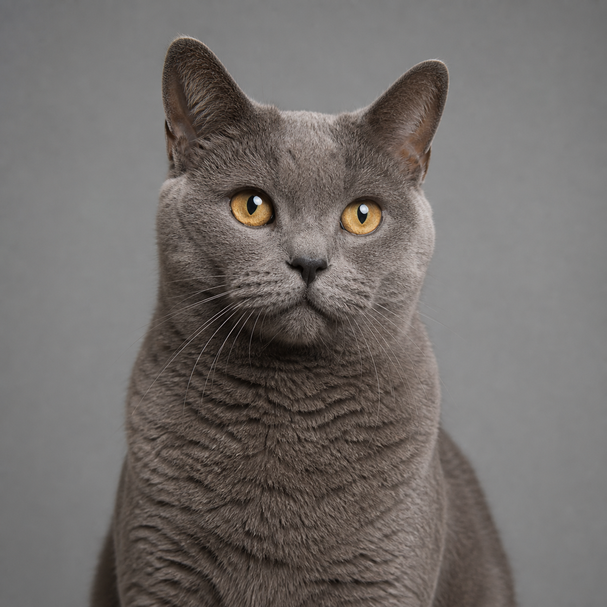
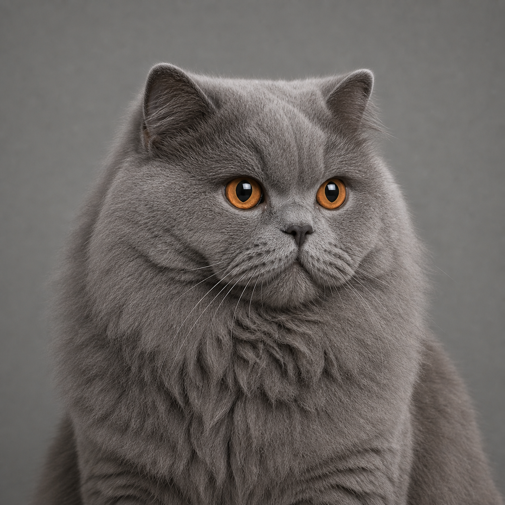

브리티시 숏헤어
동그란 얼굴 뒤에는 어떤 이야기가 숨어 있을까요?
영국에서 가장 많이 등록된 품종
1위
2024년 6,415마리. 등록 고양이 18,535마리 가운데 34.6%
몸이 다 자랄 때까지
3~5년
미국 고양이 애호가 협회 표준. 영국 고양이 등록 단체 문서는 3~4세
병원 기록으로 계산한 평균 수명
9.58년
영국 1차 진료 생명표, 고양이 의학·외과 학술지 2024
첫 만남
이 동그란 고양이는 누구일까요?
영국에서 150년 넘게 사랑받은 브리티시 숏헤어입니다.
1871년 7월 13일, 런던의 커다란 유리 궁전에 고양이들이 모였습니다. 영국에서 처음 열린 고양이 대회였습니다. 그날 잉글리시 숏헤어가 가장 뛰어난 고양이로 뽑혔습니다. 이 고양이가 오늘날 브리티시 숏헤어의 조상입니다.
150여 년이 흐른 지금, 브리티시 숏헤어는 영국에서 가장 많이 등록되는 품종이 됐습니다. 둥근 얼굴과 빽빽한 털 덕분에 세계 여러 나라에서도 사랑받습니다.
유명한 만큼 헷갈리는 이야기도 많습니다. 정말 무릎에 앉는 것을 싫어할까요? 회색 털만 있을까요? 체셔 고양이의 모델이었을까요? 사진과 기록을 보면서 하나씩 답을 찾아봅니다.
숫자와 건강 이야기는 어른과 함께 읽어 주세요. 어려운 말은 처음 나올 때 쉬운 뜻을 붙였습니다.
어려운 말이 나오면 여기서 찾아보세요
고양이 단체와 건강에 관한 낱말을 쉬운 뜻으로 모았습니다.
- 영국 고양이 등록 단체 (Governing Council of the Cat Fancy)
- 영국에서 품종 등록과 쇼 기준을 관리하는 단체입니다.
- 미국 고양이 애호가 협회 (Cat Fanciers’ Association)
- 미국을 중심으로 품종 표준과 고양이 쇼를 운영하는 단체입니다.
- 국제고양이협회 (The International Cat Association)
- 여러 나라에서 품종 등록과 고양이 쇼를 운영하는 국제 단체입니다.
- 국제고양이연맹 (International Feline Federation)
- 유럽 여러 나라의 고양이 단체가 모인 국제 연맹입니다.
- 비대성 심근증 (Hypertrophic Cardiomyopathy)
- 심장 근육이 비정상적으로 두꺼워지는 질환입니다.
- 다낭성 신장병 (Polycystic Kidney Disease)
- 신장에 물혹이 생기는 유전질환입니다.
- 자가면역 림프증식 증후군 (Autoimmune Lymphoproliferative Syndrome)
- 면역세포가 비정상적으로 쌓이는 유전질환입니다.
- 몸 상태 점수 (Body Condition Score)
- 고양이가 마르거나 살찐 정도를 1점부터 9점까지 표시한 값입니다.
- 고양이 하부요로기질환 (Feline Lower Urinary Tract Disease)
- 방광과 요도 등 소변길 아래쪽에 생기는 여러 질환을 묶어 부르는 말입니다.
- 95% 신뢰구간 (95% Confidence Interval)
- 같은 조사를 여러 번 했을 때 실제 값이 들어 있을 것으로 예상하는 범위입니다.
- 오즈비 (Odds Ratio)
- 두 집단에서 어떤 일이 나타날 가능성을 비교한 숫자입니다. 1보다 클수록 첫 번째 집단에서 나타날 가능성이 더 높습니다.
숫자를 다시 확인해 봐요
- 널리 퍼진 말
- 영국에서 등록되는 새끼 고양이의 약 절반이 브리티시 숏헤어입니다.
- 확인한 숫자
- 2024년에는 18,535마리 가운데 6,415마리가 등록됐습니다. 비율은 34.6%입니다. 브리티시 롱헤어를 더해도 39.1%입니다.
이 섹션의 출처
- 영국 고양이 등록 단체, Registered Cats By Breed 2023-2024 (2024년 등록 마릿수)
- 영국 고양이 등록 단체, 당대 쇼 기록 (1871년 크리스탈 팰리스 캣쇼, 베스트 인 쇼)
- 미국 고양이 애호가 협회 Show Standard, 2026 개정 (완전 성숙 3~5년)
- Teng, Brodbelt, Church & O'Neill, 고양이 의학·외과 학술지, 2024 (기대수명 9.58년)
한눈에 보기
얼마나 크고 언제 다 자랄까요?
몸은 천천히 자랍니다. 완전히 어른이 되려면 3~5년이 걸립니다.
“브리티시 숏헤어는 몇 킬로그램인가요?” 한 숫자로 답하기는 어렵습니다. 수컷과 암컷의 크기가 다르고 고양이마다 자라는 속도도 다르기 때문입니다.
고양이 대회가 정한 수컷의 기준 체중은 4.5~7.3kg입니다. 호주 동물병원에서 어른 고양이를 직접 재 보니 평균은 5.4kg이었습니다.
평균이 곧 알맞은 몸무게라는 뜻도 아닙니다. 조사한 고양이 가운데 47.7%가 과체중이거나 비만이었습니다. 몸무게와 함께 갈비뼈와 허리 모양도 살펴야 합니다.
암컷 3.6~5.0kg 국제고양이협회 기준. 미국 고양이 애호가 협회 품종 소개 페이지는 수컷 최대 7.7kg, 영국 고양이 등록 단체는 수컷 4.1~7.7kg. 미국 고양이 애호가 협회 품종 표준 자체에는 체중 규정이 없습니다 단체별 상이
왜 수명 숫자가 다를까요? 9.58년은 영국 동물병원에 온 고양이 1,254,484마리 가운데 사망한 7,936마리의 기록으로 계산했습니다. 어린 나이에 죽은 고양이도 포함합니다. 한 고양이가 살 수 있는 가장 많은 나이를 뜻하지는 않습니다.
어릴 때 몸무게도 살펴야 할까요? 생후 12개월 안에 한 번이라도 3.3kg 이상이었던 고양이는 집단의 20%가 사망하거나 안락사된 시점이 6.6세였습니다. 3.3kg 미만이었던 고양이는 12.3세였습니다. 이 숫자는 절반이 그 나이에 죽었다는 뜻이 아닙니다. 원인과 결과를 증명한 연구도 아닙니다.
숫자에는 언제, 어디에서, 몇 마리를 조사했는지 함께 적었습니다. 숫자만 떼어 보면 뜻을 잘못 이해할 수 있습니다.
이 페이지의 통계는 2026년 7월 25일 기준으로 확인한 자료입니다. 영국 고양이 등록 단체 등록 통계는 2023~2024년, 호주 체중 자료는 2008~2017년 진료 기록, 영국 생명표는 2019년 사망 사례 기준입니다.
이 섹션의 출처
- 영국 고양이 등록 단체, Registered Cats By Breed 2023-2024
- Nicholson et al., Frontiers in Veterinary Science, 2023 (호주 1차 진료 기록 2,540마리, 체중 기록 9,339건, 2008~2017년)
- 국제고양이협회 British Breed Group Standard / 미국 고양이 애호가 협회 품종 소개 페이지 / 영국 고양이 등록 단체 품종 소개 페이지 (체중 범위)
- 미국 고양이 애호가 협회 Show Standard, 2026 개정 · 영국 고양이 등록 단체 품종자문위원회 Breeding Policy (완전 성숙)
- Teng, Brodbelt, Church & O'Neill, 고양이 의학·외과 학술지, 2024 (기대수명)
- Granström et al., Journal of Veterinary Internal Medicine 25(4):866, 2011 (비대성 심근증)
- Kehl, Mueller & Giger, Animal Genetics, 2019 (혈액형)
몸의 생김새
왜 온몸이 동글동글할까요?
둥근 얼굴만 보지 말고 짧은 등, 굵은 다리, 둥근 발도 찾아보세요.
사진 속 고양이 몸을 살펴봐요
먼저 등을 보세요. 등이 길게 늘어지지 않고 짧게 이어집니다. 앞쪽의 어깨와 뒤쪽의 엉덩이도 한쪽만 좁지 않습니다. 이렇게 짧고 넓고 단단한 몸을 ‘코비’ 체형이라고 부릅니다.
몸집이 크다고 모두 코비 체형은 아닙니다. 앞가슴만 넓고 엉덩이가 좁다면 알맞은 모양이 아닙니다. 몸의 앞과 뒤가 고르게 묵직해야 합니다.
1몸통
몸은 짧고 넓습니다. 등은 짧고 거의 수평입니다. 어깨와 엉덩이는 폭과 깊이가 비슷합니다.
2다리와 발
다리는 짧거나 중간 길이입니다. 뼈대는 굵고 발은 둥글고 단단합니다. 앞발가락은 5개, 뒷발가락은 4개입니다.
3머리
머리는 둥글고 묵직합니다. 볼과 턱도 둥글어서 얼굴 전체가 동그랗게 보입니다.
4눈과 귀
눈은 크고 둥글며 서로 넓게 떨어져 있습니다. 귀는 중간 크기이고 끝이 둥글게 생겼습니다. 두 귀 사이도 넓습니다.
5코
코는 넓고 너무 납작하지 않습니다. 옆에서 보면 코의 선이 부드럽게 들어갑니다. 갑자기 꺾인 코는 알맞은 모습이 아닙니다.
6꼬리
꼬리는 시작 부분이 굵습니다. 끝으로 갈수록 조금씩 가늘어지며 맨 끝은 둥글게 마무리됩니다.


궁금하면 열어 보세요
등록 단체마다 몸을 보는 기준이 조금씩 달라요
고양이 등록 단체는 품종의 특징을 규칙으로 정합니다. 큰 방향은 비슷하지만 작은 부분은 다르게 설명합니다.
| 살펴볼 곳 | 단체별 기준 |
|---|---|
| 몸통 | 영국 고양이 등록 단체는 짧고 넓은 코비 체형으로 설명합니다. 국제고양이협회는 코비보다 조금 긴 세미 코비 체형으로 봅니다. 미국 고양이 애호가 협회는 몸이 너무 길면 점수를 깎습니다. |
| 머리 | 미국 고양이 애호가 협회는 머리 위에 작고 평평한 부분이 있을 수 있다고 봅니다. 국제고양이협회는 코 위의 머리가 평평하지 않아야 한다고 적습니다. |
| 코 | 미국 고양이 애호가 협회와 영국 고양이 등록 단체는 코선이 갑자기 꺾이는 모양을 좋게 보지 않습니다. 국제고양이협회는 짧고 곧으며 살짝 올라간 코를 기준으로 삼습니다. |
| 꼬리 | 미국 고양이 애호가 협회는 몸에 어울리는 중간 길이를 기준으로 삼습니다. 국제고양이협회는 몸길이의 3분의 2 정도를 기준으로 삼습니다. |
| 성장기 | 영국 고양이 등록 단체는 생후 9개월부터 2살 사이의 고양이가 잠시 길고 날씬해 보일 수 있다고 설명합니다. |
수컷의 큰 볼살은 지방이 아니에요
중성화하지 않은 수컷은 어른 고양이가 되면서 볼이 두툼해질 수 있습니다. 이 볼살을 ‘스터드 졸’이라고 부릅니다. 단순히 지방이 붙은 것이 아니라, 피부와 그 아래 조직이 두꺼워진 것입니다.
미국 고양이 애호가 협회도 암컷은 수컷보다 몸집이 작고 수컷은 볼살이 더 크다고 설명합니다. 다만 이 볼살이 정확히 몇 살에 완성되는지 밝힌 수의학 논문은 없습니다.
털 속층은 단체마다 다르게 설명해요
언더코트는 겉털 아래에 자라는 부드러운 속털을 뜻합니다.
| 단체 | 털을 보는 방법 |
|---|---|
| 미국 고양이 애호가 협회 | 짧고 매우 빽빽하며 단단하고 탄력 있는 털을 기준으로 삼습니다. 이중모나 양털 같은 질감은 아니라고 적습니다. |
| 영국 고양이 등록 단체 | ‘이중모’라는 말을 쓰지 않습니다. |
| 국제고양이연맹 | 속털이 충분히 자라야 한다고 적습니다. |
| 국제고양이협회 | 속털이 부족하면 점수를 깎습니다. |
털 속층은 하나로 단정할 수 없습니다. 단체마다 기준이 다릅니다.
코가 너무 짧으면 숨쉬기 어려울 수 있어요
영국 고양이 등록 단체와 미국 고양이 애호가 협회는 머리뼈가 너무 짧아 콧구멍이 좁아진 고양이를 인정하지 않거나 실격 처리할 수 있습니다. 고양이가 편하게 숨쉬려면 코가 지나치게 짧아지지 않아야 합니다.
몸길이와 키는 몇 센티미터일까요?
영국 고양이 등록 단체, 미국 고양이 애호가 협회, 국제고양이협회의 품종 기준에는 몸길이와 키가 몇 센티미터인지 적혀 있지 않습니다. 출처가 분명하지 않은 숫자는 이 사이트에 싣지 않았습니다.
이 섹션의 출처
- 미국 고양이 애호가 협회 Show Standard, 2026 개정 (머리, 코, 머즐, 귀, 다리와 발, 꼬리, 성적 이형, 털, 실격과 감점)
- 영국 고양이 등록 단체 Standard of Points (코비 정의, 증서 보류 사유, 9개월~2년 개체 허용)
- 국제고양이협회 British Breed Group Standard (세미 코비, 코 규정, 꼬리 비율, 언더코트 감점)
- 국제고양이연맹 표준 (언더코트 요구)
털 색과 무늬
회색 털만 있을까요?
아니요. 금빛, 은빛, 검정, 크림, 점무늬 고양이도 있습니다.
브리티시 숏헤어라고 하면 청회색 털을 먼저 떠올립니다. 이 색을 ‘블루’라고 부릅니다. 19세기 사람들이 블루 고양이를 골라 교배하면서 가장 널리 알려진 색이 됐습니다.
검정, 흰색, 크림, 초콜릿, 은빛과 금빛 고양이도 있습니다. 줄무늬와 점무늬도 있고 얼굴과 발과 꼬리만 짙은 컬러포인트도 있습니다.
눈 색도 털과 짝을 이룹니다. 한 가지 색으로 된 고양이는 구리색이나 진한 금색 눈이 많습니다. 골든 팁드와 블랙 팁드는 초록색 눈, 컬러포인트는 파란 눈이 기준입니다.

블루 셀프
코퍼, 오렌지, 진한 골드

블랙 셀프
코퍼, 오렌지, 진한 골드

화이트 (오드아이)

라일락
코퍼, 오렌지, 진한 골드

크림
코퍼, 오렌지, 진한 골드

초콜릿
코퍼, 오렌지, 진한 골드

클래식 태비

스팟티드 태비

실버 팁드
블랙 팁드는 그린 계열

골든 팁드
그린 계열

토티

컬러포인트
명확한 파란색
모든 고양이를 같은 각도와 같은 배경으로 놓았습니다. 얼굴보다 털 색과 눈 색이 어떻게 달라지는지 살펴보세요.
대회에서는 털 색을 어떻게 나눌까요?
영국 고양이 등록 단체 공인 색과 패턴 그룹 7개
| 그룹 | 포함되는 색과 패턴 |
|---|---|
| 셀프 | 화이트, 블랙, 블루, 초콜릿, 라일락, 레드, 크림, 시나몬, 폰 |
| 태비 | 클래식, 매커럴, 스팟티드, 틱드 |
| 팁드 | 실버, 셀프, 골든, 토티, 토티골든 |
| 스모크 | 스모크 계열 |
| 토티 | 토티 계열 |
| 바이컬러 계열 | 바이컬러, 트라이컬러, 밴, 할리퀸 |
| 컬러포인트 | 컬러포인티드 |
백색 비율 규정 (영국 고양이 등록 단체)
| 구분 | 백색 비율 | 추가 조건 |
|---|---|---|
| 바이컬러 | 1/3 이상 1/2 이하 | 꼬리는 전부 유색 |
| 할리퀸 | 2/3 이상 | 얼굴에 반드시 색이 있어야 함 |
| 밴 | 위 두 경우보다 넓음 | 색이 머리와 꼬리에 국한 |
팁핑 깊이 (미국 고양이 애호가 협회)
| 구분 | 착색 깊이 | 설명 |
|---|---|---|
| 친칠라 | 털 길이의 약 1/8 | 끝부분만 옅게 착색 |
| 셰이디드 | 털 길이의 약 1/3 | 친칠라보다 깊게 착색 |
미국 고양이 애호가 협회는 실버와 골든 계열, 곧 셰이디드 실버, 친칠라 실버, 셰이디드 골든, 친칠라 골든, 그리고 블랙과 블루와 초콜릿과 라일락 골든에 그린 또는 블루그린 눈을 요구합니다.
눈 색 조합 규칙 (영국 고양이 등록 단체)
| 모색 계열 | 요구되는 눈 색 |
|---|---|
| 셀프 계열 | 코퍼, 오렌지, 진한 골드 |
| 블랙 실버 태비 | 그린 계열 |
| 블랙 팁드 | 그린 계열 |
| 골든 팁드 | 그린 계열 |
| 컬러포인트 | 명확한 파란색 |
국제고양이연맹 눈 색 코드
| 코드 | 눈 색 |
|---|---|
| A | 딥블루 |
| B | 코퍼, 딥오렌지 |
| C | 오드아이 |
| D | 그린, 블루그린 |
| E | 그린, 옐로이시그린 |
| F | 강렬한 딥 샴 블루 |
국제고양이연맹은 녹색 눈 고양이와 구리빛 눈 고양이를 서로 다른 부문에서 심사합니다.
골든도 정식 색일까요?
- 널리 퍼진 말
- 미국 고양이 애호가 협회는 골든 색을 인정하지 않습니다.
- 확인한 사실
- 2026년 기준에는 셰이디드 골든과 친칠라 골든 등 여러 골든 색이 정식으로 들어 있습니다. 골든 자체가 실격 이유는 아닙니다. 발가락이나 가슴과 목에 흰색이 나타나 CORIN 유전자의 흔적이 드러날 때 실격합니다.
브리티시 숏헤어의 표준은 등록 단체마다 다릅니다. 이 페이지는 영국 고양이 등록 단체, 미국 고양이 애호가 협회, 국제고양이협회, 국제고양이연맹의 원문을 구분해 표기합니다. 어느 한 단체의 규정을 품종 전체의 정의처럼 쓰지 않습니다.
이 섹션의 출처
- 영국 고양이 등록 단체 Standard of Points (공인 색과 패턴 그룹, 백색 비율, 눈 색 규칙, 증서 보류 사유)
- 미국 고양이 애호가 협회 Show Standard, 2026 개정 (친칠라와 셰이디드 팁핑, 실버와 골든의 눈 색, 태비 패턴 세 가지, 시나몬과 폰의 AOV 분류)
- 국제고양이연맹 표준 (눈 색 코드, 별도 클래스 심사)
- 국제고양이협회 품종 소개 (블루의 인기)
성격과 행동
안기는 걸 좋아할까요?
품에 오래 있기보다 사람 옆에 조용히 앉아 있는 것을 더 좋아합니다.
무릎에 올라오지 않으면 사람을 싫어하는 걸까요? 그렇지 않습니다. 브리티시 숏헤어는 품에 오래 안기기보다 같은 방이나 바로 옆자리에 머무는 것을 좋아합니다.
미국 고양이 애호가 협회는 이 고양이가 먼저 달려들기보다 초대를 기다린다고 설명합니다. 영국 고양이 등록 단체는 조용하고 사람과 잘 어울린다고 소개합니다.
안아야 할 때는 앞다리만 들어 올리지 마세요. 가슴과 엉덩이를 함께 받쳐 몸 전체가 흔들리지 않게 잡아 주세요.

고양이 단체는 성격을 어떻게 설명할까요?
국제고양이협회가 설명한 기본 기질 표준 본문
국제고양이협회는 기질이 약간 내성적이고 네 발을 바닥에 두는 품종이며 부드럽고 단단하게 다루고 안아 올릴 때 몸을 받쳐야 한다고 기술합니다.
근거: 국제고양이협회 British Breed Group Standard
국제고양이협회의 심사 기준 심사 규정
국제고양이협회는 기질이 도전적이지 않아야 하며 명백한 도전의 징후는 실격이라고 규정합니다.
근거: 국제고양이협회 심사 규정
미국 고양이 애호가 협회가 설명한 거리감 소개 페이지
미국 고양이 애호가 협회는 차분하고 조용하며 사람을 좋아하고 무릎으로 뛰어들기보다 초대를 기다려 옆자리 소파에 앉는다고 기술합니다.
근거: 미국 고양이 애호가 협회 품종 소개 페이지
미국 고양이 애호가 협회가 설명한 가족 관계 소개 페이지
미국 고양이 애호가 협회는 가족 구성원 한 명을 고르기보다 각자에게 관심과 애정을 나눈다고 기술합니다.
근거: 미국 고양이 애호가 협회 품종 소개 페이지
영국 고양이 등록 단체가 설명한 성격 소개 페이지
영국 고양이 등록 단체는 수다스러운 품종이 아니며 사람과 강한 유대를 맺는 참을성 있고 관대한 동반자이고 어른 고양이에게는 게으른 경향이 있다고 기술합니다.
근거: 영국 고양이 등록 단체 품종 소개 페이지
자료의 종류에 따라 정보의 무게도 다릅니다. 표준 본문은 고양이 쇼에서 직접 쓰는 심사 기준입니다. 심사 규정은 실격 여부를 가릅니다. 소개 페이지는 일반 독자를 위한 설명입니다. 직접 측정한 연구 결과가 아니라 관찰한 내용을 적은 경우가 많습니다.
성격에 관한 자료를 더 볼까요?
표 1. 흔한 서술과 실제 근거
| 흔한 서술 | 실제 근거 |
|---|---|
| 테디베어 같은 외모 | 영국 고양이 등록 단체는 새끼 고양이가 테디베어처럼 보인다고 소개합니다. 새끼 고양이의 인상을 설명한 말이며 품종 심사 기준은 아닙니다. |
| 이중모 | 미국 고양이 애호가 협회 표준은 이중모가 아니라고 정반대를 명시하고 국제고양이협회는 언더코트 부실을 감점합니다. 두 단체가 충돌합니다 단체별 상이 |
| 체셔 고양이의 모델 | 등록 단체 문서 어디에도 없습니다. 체셔 고양이의 기원은 밝혀지지 않았습니다 |
| 무릎냥이 | 미국 고양이 애호가 협회와 국제고양이협회와 영국 고양이 등록 단체 세 단체가 모두 반대 방향으로 기술합니다 |
| 저알레르기 품종 | 과학적으로 확인된 저알레르기 고양이 품종은 없습니다 |
표 2. 성별 차이와 생활 특성
| 항목 | 서술 | 근거 등급 |
|---|---|---|
| 성별 차이 | 국제고양이협회는 수컷을 happy-go-lucky, 암컷을 more serious로 기술합니다 | 관찰 서술이며 측정 데이터가 아닙니다 |
| 수직 이동 | 미국 고양이 애호가 협회는 신체 구조상 이 품종이 주방 조리대에 올라갈 가능성이 낮다고 기술하고 영국 고양이 등록 단체도 네 발을 바닥에 두는 것을 선호한다고 적습니다 | 소개 페이지 |
| 실내 사육 | 영국 고양이 등록 단체는 실내 전용 반려묘로 적합하되 적절한 자극이 필요하다고 기술합니다 | 소개 페이지 |
무릎에 앉지 않으면 싫어하는 걸까요?
- 널리 퍼진 말
- 품에 안겨 오래 있는 것을 좋아합니다.
- 단체의 설명
- 무릎보다 바닥이나 옆자리를 좋아합니다. 가까이 머무는 것도 애정을 나타내는 방법입니다.
모든 단체가 성격을 심사할까요?
- 국제고양이협회
- 성격을 품종 기준에 적었습니다.
- 미국 고양이 애호가 협회
- 100점을 모두 생김새에 줍니다. 성격 점수는 없습니다.
이 섹션의 출처
- 국제고양이협회 British Breed Group Standard (기질 서술, 심사 규정)
- 미국 고양이 애호가 협회 Show Standard, 2026 개정 (기질 항목 부재, 배점)
- 미국 고양이 애호가 협회 품종 소개 페이지 (차분함, 옆자리 선호, 가족 구성원 대응, 조리대)
- 영국 고양이 등록 단체 품종 소개 페이지 (조용한 성격, 참을성, 활동량이 줄어드는 경향, 새끼 고양이의 테디베어 같은 인상, 실내 생활)
- 국제고양이협회 품종 소개 페이지 (성별 차이 서술)
- 영국 고양이 등록 단체 품종자문위원회 Breeding Policy, 2018년 6월 (기질 서술의 각주 출처)
- IAABC Foundation Journal · PLOS ONE (고양이 일반의 분리 관련 문제, 2차 자료)
닮은 품종
회색 고양이는 모두 같은 품종일까요?
눈, 귀, 몸을 차례로 보면 닮은 고양이도 구별할 수 있습니다.
“회색 털이면 모두 브리티시 숏헤어일까요?” 아닙니다. 샤르트뢰와 러시안 블루도 푸른빛이 도는 회색 털을 가졌습니다.
먼저 눈을 보세요. 샤르트뢰는 구리색이나 금색 눈, 러시안 블루는 선명한 초록색 눈을 가집니다. 브리티시 숏헤어 블루는 둥근 얼굴에 구리빛 눈이 어울립니다.
브리티시 숏헤어는 회색뿐 아니라 골든, 실버, 태비처럼 여러 색과 무늬가 있습니다. 사진 다섯 장에서 눈 색과 귀 모양, 털 길이를 비교해 보세요.





다섯 장 모두 같은 각도와 배경, 같은 크롭으로 맞췄습니다. 사진 아래의 눈 색과 털 길이를 먼저 비교해 보세요.
네 품종을 표로 자세히 비교할까요?
미국 고양이 애호가 협회의 품종 기준으로 비교했습니다.
| 항목 | 브리티시 숏헤어 | 샤르트뢰 | 러시안 블루 | 스코티시 폴드 |
|---|---|---|---|---|
| 원산지 | 영국 | 프랑스 | 러시아 | 스코틀랜드 |
| 공인 모색 | 전 색·전 패턴 단체별 상이 | 블루그레이 하나 | 블루 하나 | 유전적으로 가능한 모든 색과 무늬 |
| 눈 색 | 셀프 계열은 코퍼·오렌지·진한 골드, 모색에 따라 그린 계열과 블루도 있음 | 코퍼에서 골드, 녹색은 실격 | 선명한 녹색 | 털 색에 맞는 눈 색. 흰색·바이컬러·반 무늬는 파란 눈과 오드아이도 허용 |
| 머리 | 둥글고 육중, 귀는 중간 크기에 밑동이 넓고 끝이 둥글며 넓게 벌어짐 | 둥글고 넓되 구형이 아님, 머즐이 좁고 뾰족, 귀가 높이 달리고 곧추섬 | 매끄러운 형태, 귀가 크고 끝이 뾰족함 | 접힌 귀 |
| 체형 | 중형에서 대형, 사각형 코비 | 중간 길이의 튼튼한 몸, 넓은 어깨와 깊은 가슴 | 가늘고 긴 체형 | 중형, 어깨부터 골반까지 둥글고 고른 몸 |
| 코트 | 짧고 매우 조밀하며 단단하고 바삭하고 탄력 있음. 미국 고양이 애호가 협회는 이중모가 아니라고 명시 | 중간보다 짧고 약간 양털 같은 이중모 | 이중모가 몸에서 떠 있고 실크 촉감 | 숏헤어는 짧고 조밀하며 폭신하고 부드러움 |
| 브리티시와의 관계 | 기준 개체 | 별개 품종 | 별개 품종 | 미국 고양이 애호가 협회 표준상 브리티시 숏헤어를 아웃크로스로 삼음 |
샤르트뢰와 스코티시 폴드 항목은 미국 고양이 애호가 협회가 공개한 현행 품종 표준을 기준으로 정리했습니다.
어디부터 살펴볼까요?
1. 눈 색
먼저 눈 색을 봅니다. 샤르트뢰의 눈은 구리색부터 금색까지이며 녹색 눈은 품종 기준에서 실격입니다. 러시안 블루는 선명한 녹색 눈을 가져야 합니다.
근거: 미국 고양이 애호가 협회 샤르트뢰·러시안 블루 표준
2. 귀
귀를 봅니다. 샤르트뢰는 귀가 높이 달려 곧추서고 러시안 블루는 귀가 크고 끝이 뾰족합니다. 브리티시 숏헤어는 귀가 넓게 벌어져 머리의 둥근 윤곽을 해치지 않습니다.
근거: 미국 고양이 애호가 협회 각 품종 표준
3. 털의 느낌
털의 느낌도 다릅니다. 브리티시 숏헤어의 털은 빽빽하고 단단하며 탄력이 있습니다. 러시안 블루의 털은 속털과 겉털로 나뉘며 몸에서 살짝 떠 있고 비단처럼 부드럽습니다.
근거: 미국 고양이 애호가 협회 각 품종 표준
4. 털 색
샤르트뢰와 러시안 블루는 푸른빛이 도는 회색만 품종의 색으로 인정받습니다. 다른 색이라면 이 두 품종이 아닙니다.
근거: 미국 고양이 애호가 협회 각 품종 표준
5. 스코티시 폴드는 예외
귀가 접히지 않은 스코티시 폴드는 생김새만으로 확실하게 구별하기 어렵습니다. 브리티시 숏헤어와 교배할 수 있기 때문입니다. 이런 경우에는 혈통서를 확인해야 합니다.
근거: 미국 고양이 애호가 협회 스코티시 폴드 표준
브리티시 롱헤어
| 항목 | 내용 |
|---|---|
| 기원 | 1차 세계대전 후 브리더들이 도입한 페르시안에서 유입된 장모 유전자 (영국 고양이 등록 단체) |
| 국제고양이협회 인정 | 2009년 5월 |
| 영국 고양이 등록 단체 인정 | 2017년 인정, 2021년 챔피언십 지위 |
| 국제고양이연맹 인정 | 2017년 |
| 표준 관리 | 국제고양이협회와 국제고양이연맹은 숏헤어와 롱헤어를 한 표준 문서에서 다룹니다. 미국 고양이 애호가 협회 표준에는 롱헤어 항목이 없습니다. |
| 아웃크로스 | 영국 고양이 등록 단체는 2025년 3월 1일부터 브리티시 롱헤어를 승인된 아웃크로스로 다시 인정 |
국제고양이협회는 브리티시 숏헤어가 다른 품종과 교배하는 것을 허용하지 않습니다. 반대로 스코티시 폴드는 브리티시 숏헤어와 교배할 수 있습니다.
오해 바로잡기
- 흔한 오해
- 회색빛 파란 고양이는 대체로 브리티시 숏헤어입니다.
- 실제
- 샤르트뢰와 러시안 블루는 블루 계열만 공인하는 별개 품종이며 눈 색 규정이 정반대입니다. 샤르트뢰는 녹색 눈이 실격이고 러시안 블루는 선명한 녹색 눈을 요구합니다.
오해 바로잡기
- 흔한 오해
- 스코티시 폴드는 귀만 보면 구별됩니다.
- 실제
- 귀가 접히지 않은 개체는 브리티시 숏헤어와 매우 닮아 혈통서 외에는 확실한 구별법이 없습니다. 미국 고양이 애호가 협회 표준상 스코티시 폴드는 브리티시 숏헤어를 아웃크로스로 삼습니다.
이 섹션의 출처
- 샤르트뢰의 모색·눈 색·머리: 미국 고양이 애호가 협회 샤르트뢰 표준
- 러시안 블루의 모색·눈 색·체형·코트: 미국 고양이 애호가 협회 러시안 블루 표준
- 스코티시 폴드의 기원과 아웃크로스, 최초 개체 "수지": 미국 고양이 애호가 협회 스코티시 폴드 표준
- 브리티시 숏헤어의 코트·귀·체형: 미국 고양이 애호가 협회 Show Standard(2026 개정) · 영국 고양이 등록 단체 Standard of Points
- 허용 아웃크로스 "None": 국제고양이협회 British Breed Group Standard
- 브리티시 롱헤어의 기원과 단체별 인정 연도, 2025년 아웃크로스 재인정: 영국 고양이 등록 단체 · 국제고양이연맹 · 국제고양이협회
품종의 역사
이 고양이는 어디에서 왔을까요?
오래된 로마 이야기와 1871년에 남은 기록을 따라가 봅니다.
브리티시 숏헤어의 분명한 기록은 1871년부터 시작됩니다. 7월 13일 런던 크리스탈 팰리스에서 영국 최초의 고양이 대회가 열렸습니다. 고양이 170마리가 출품됐고 잉글리시 숏헤어가 가장 뛰어난 고양이로 뽑혔습니다. 대회를 만든 사람은 자연사 화가 해리슨 위어였습니다.
두 차례의 세계대전이 지나며 브리티시 숏헤어의 수가 크게 줄었습니다. 사람들은 페르시안, 러시안 블루, 버미즈, 샤르트뢰와 교배해 품종을 이어 갔습니다. 이 과정에서 긴 털 유전자가 들어왔고 훗날 브리티시 롱헤어가 태어났습니다.


시간을 따라가 볼까요?
-
1871년 7월 13일
영국 최초의 고양이 대회 기록으로 확인
런던 시드넘 크리스탈 팰리스에서 열렸고 고양이 170마리가 출품됐습니다. 베스트 인 쇼는 브리티시 숏헤어의 전신인 잉글리시 숏헤어였습니다. 미국 고양이 애호가 협회와 영국 고양이 등록 단체는 모두 우승 고양이를 해리슨 위어가 키우던 14살 암컷 블루 태비로 기록합니다.
-
1887년
내셔널 캣 클럽이 생겼어요 기록으로 확인
해리슨 위어가 창립했습니다. 위어는 자연사 화가였고 1871년 쇼를 조직하고 심사를 맡았으며 캣 팬시의 아버지로 불립니다.
-
1900년 무렵
털 무늬별 대회가 생겼어요 기록으로 확인
자기 색, 태비, 스모크처럼 털 무늬에 따라 나누는 부문이 생길 만큼 널리 알려졌습니다. 1900년대 초에는 페르시안 같은 장모종이 인기를 얻으면서 관심이 줄었습니다.
-
1901년
아메리카에 처음 등록됐어요 기록으로 확인
제인 캐스카트가 수입한 수컷 레드 태비 "Belle of Bradford"가 아메리카 대륙 최초로 등록된 단모종입니다.
-
1914~1918년
1차 세계대전 뒤 다시 늘렸어요 기록으로 확인
전쟁으로 개체 수가 크게 줄자 번식가들은 등록되지 않은 집고양이와 페르시안을 교배했습니다. 영국 등록 기관은 브리티시 숏헤어와 3세대에 걸쳐 다시 교배한 고양이만 등록했습니다. 이때 들어온 긴 털 유전자가 훗날 브리티시 롱헤어의 기원이 되었습니다.
-
1945년 이후
2차 세계대전 뒤 다시 이어 갔어요 기록으로 확인
개체 수가 다시 크게 줄었습니다. 전쟁이 끝난 뒤 번식가들은 러시안 블루, 버미즈, 샤르트뢰, 페르시안과 교배해 품종의 특징을 되살렸습니다.
-
1967~1980년
미국 대회에서도 인정받았어요 기록으로 확인
ACA가 1967년 "브리티시 블루"에 챔피언십 지위를 먼저 부여했고 미국 고양이 애호가 협회는 1980년에 뒤따랐습니다. 첫 미국 고양이 애호가 협회 그랜드 챔피언은 GC Tikikat's Snowmaiden of Denimar입니다.
-
1979년 6월
국제 대회에서도 인정받았어요 기록으로 확인
국제고양이협회는 브리티시 숏헤어를 1979년 6월에, 브리티시 롱헤어를 2009년 5월에 챔피언십 품종으로 인정했습니다.
오늘날의 브리티시 숏헤어가 19세기 고양이보다 더 짧고 둥근 몸을 갖게 된 데에는 페르시안과의 교배가 영향을 주었다는 설명이 널리 쓰입니다. 다만 그 영향을 정확한 수치로 보여 주는 자료는 없습니다.
단체별 공인 연도
| 단체 | 브리티시 숏헤어 | 브리티시 롱헤어 |
|---|---|---|
| 영국 고양이 등록 단체 | 19세기부터 등록 체계 안에 있음 | 2017년 인정, 2021년 챔피언십 |
| 미국 고양이 애호가 협회 | 1980년 챔피언십 | 표준에 항목 없음 |
| 국제고양이협회 | 1979년 6월 챔피언십 | 2009년 5월 챔피언십 |
| 국제고양이연맹 | 이 표에서는 공인 연도를 다루지 않음 | 2017년 인정 |
| ACA | 1967년 "브리티시 블루" 챔피언십 | 해당 없음 |
오해 바로잡기
- 흔한 오해
- 1871년 첫 캣쇼의 우승묘는 품종과 소유자가 분명하지 않습니다.
- 실제
- 미국 고양이 애호가 협회와 영국 고양이 등록 단체는 모두 베스트 인 쇼를 해리슨 위어가 키우던 14세 암컷 블루 태비 숏헤어로 기록합니다. 당시의 잉글리시 숏헤어는 오늘날 브리티시 숏헤어의 전신입니다.
이 섹션의 출처
- 영국 고양이 등록 단체 품종 소개 페이지 (로마 유입설, 1871년 캣쇼, 브리티시 롱헤어의 기원)
- 국제고양이협회 품종 소개 페이지 (서기 43년 기원, 공인 연도)
- 미국 고양이 애호가 협회, 1995 (1900년 무렵의 클래스 확립, 1901년 미국 진출, 양차 대전 이후 복원, ACA·미국 고양이 애호가 협회 공인)
- 영국 고양이 등록 단체 / 국제고양이연맹 (브리티시 롱헤어 인정 연도)
미디어와 대중문화
톰과 장화신은 고양이도 브리티시 숏헤어일까요?
닮아 보이는 것과 작품에서 정한 사실은 다를 수 있습니다.
“톰도 브리티시 숏헤어일까요?” 회청색 털과 둥근 얼굴은 닮았습니다. 하지만 『톰과 제리』의 공식 소개는 톰의 품종을 밝히지 않습니다.
『장화 신은 고양이』의 푸스도 주황빛 털과 동그란 얼굴 때문에 골든 브리티시 숏헤어를 떠올리게 합니다. 드림웍스의 공식 소개에는 품종이 나오지 않으므로, 닮은 캐릭터라고 보는 것이 정확합니다.
체셔 고양이의 모델이라는 이야기도 확인된 사실은 아닙니다. 아래 카드에서 “공식으로 확인된 이야기”와 “모습이 닮아 생긴 이야기”를 나누어 살펴보세요.
화면과 책 속에서 누구를 만날까요?

체셔 고양이 닮은 이야기
브리티시 숏헤어가 모델이었다고 알려졌지만 확인된 기록은 없습니다. 체셔 고양이의 기원에는 서로 다른 이야기가 세 가지 있습니다.
설명 이미지: 원작의 특정 삽화를 복제하지 않고 새로 제작

『장화 신은 고양이』의 푸스 닮은 모습
골든 브리티시 숏헤어를 떠올리게 하지만 공식 소개는 푸스의 품종을 밝히지 않습니다.
설명 이미지: 고전 동화의 검객을 골든 브리티시 숏헤어 모습으로 새로 제작

『톰과 제리』의 톰 닮은 모습
블루 브리티시 숏헤어를 떠올리게 하지만 공식 소개는 톰의 품종을 밝히지 않습니다.
설명 이미지: 톰을 떠올리게 하는 블루 고양이의 추격 장면을 새로 제작

소셜 미디어 스타 코비 품종 확인
코비는 흰 털과 파란 눈으로 알려진 브리티시 숏헤어입니다. 쇼티 어워즈는 코비를 브리티시 숏헤어라고 소개했고 당시 인스타그램 팔로워가 90만 명을 넘었다고 기록했습니다.
이미지·근거: Shorty Awards의 Coby the Cat 소개
푸스와 톰은 브리티시 숏헤어를 닮았지만 작품에서 품종을 정하지 않았습니다. 네 카드 가운데 실제 브리티시 숏헤어로 확인된 고양이는 코비입니다.
이 섹션의 출처
- 세 카드의 설명 이미지는 원작의 포스터나 특정 장면을 복제하지 않고 새로 제작했습니다.
- 『장화 신은 고양이』의 푸스: DreamWorks 공식 작품 소개에는 품종이 나오지 않습니다.
- 『톰과 제리』의 톰: Warner Bros. 공식 작품 소개에는 품종이 나오지 않습니다.
- 코비: Shorty Awards가 브리티시 숏헤어로 소개합니다.
털 관리와 생활 환경
폭신한 털은 어떻게 돌볼까요?
일주일에 한 번, 폭신한 털 사이로 빗을 천천히 지나가게 해 주세요.
“털이 짧은데도 빗어야 할까요?” 네. 브리티시 숏헤어의 털은 짧지만 아주 빽빽합니다. 평소에는 일주일에 한 번 빗으면 됩니다.
계절이 바뀌어 털이 많이 빠질 때는 조금 더 자주 빗어 주세요. 삼킨 털을 자주 토한다면 매일 부드럽게 빗는 것이 도움이 됩니다. 밥을 먹지 않거나 계속 토하면 수의사에게 물어보세요.
쇼에 나가지 않는 고양이는 정해진 날마다 목욕할 필요가 없습니다. 대신 발톱과 귀를 살피고 나이가 들어 혼자 털을 다듬기 어려워지면 빗질을 도와주세요.
집 안에서도 뛰고 긁고 숨을 곳이 필요합니다. 스크래처는 몸을 길게 뻗을 만큼 크고 흔들리지 않아야 합니다.

언제 얼마나 빗을까요?
| 목적 | 빈도 | 주당 대략치 | 근거 |
|---|---|---|---|
| 평시 털 관리 | 주 1회 | 주 1회 | 국제고양이협회는 넓은 살 빗으로 주 1회. 미국 고양이 애호가 협회도 주 1회 브러싱 또는 빗질 |
| 털갈이 철 | 빈도 상향 | 주 3회 정도 | 영국 고양이 등록 단체는 털갈이 철 그루밍 필요. 국제고양이협회 표준은 계절에 따른 털 변화를 심사 허용 사항으로 명시 |
| 헤어볼 저감 | 매일 | 주 7회 | Cornell Feline Health Center, 품종 무관 일반 권고 |
오늘은 얼마나 빗을까요?
평소
빈도 주 1회
도구 넓은 살 빗 또는 브러시
근거 국제고양이협회는 살 사이가 넓은 빗으로 일주일에 한 번 빗으라고 권합니다. 미국 고양이 애호가 협회도 일주일에 한 번 빗질하라고 안내합니다. 발톱은 정기적으로 다듬고 귀는 가끔 청소해야 합니다. 일주일에 한 번은 털 상태를 관리하기 위한 최소 횟수입니다.
털갈이 철
빈도 평소보다 자주
도구 살 사이가 넓은 빗으로 속털까지 빗습니다
근거 영국 고양이 등록 단체는 털갈이 철에 빗질이 필요하다고 적습니다. 국제고양이협회는 계절에 따라 털의 밀도와 길이, 느낌이 달라질 수 있다고 설명합니다. 털갈이 철에 빠지는 털이 늘어나는 것은 자연스러운 변화입니다.
삼킨 털을 자주 토할 때
빈도 매일
도구 매일 빗질하는 데 익숙해지게 합니다
근거 코넬 고양이 건강 센터는 삼키는 털의 양을 줄이려면 매일 빗질하라고 권합니다. 먼저 사료를 바꾸기보다 빗질 횟수를 늘리는 편이 좋습니다. 털 뭉치가 장을 막으면 위험할 수 있습니다. 자주 토하거나 밥을 잘 먹지 않으면 수의사와 상의하십시오.
표 2. 그루밍 항목별 권고
| 항목 | 권고 | 출처 |
|---|---|---|
| 브러싱 | 주 1회 이상, 목적에 따라 상향 | 미국 고양이 애호가 협회 · 국제고양이협회 |
| 목욕 | 쇼에 나가지 않으면 정기 샴푸 불필요 | 영국 고양이 등록 단체 |
| 발톱 | 정기적 손질 | 미국 고양이 애호가 협회 |
| 귀 | 가끔 청소 | 미국 고양이 애호가 협회 |
| 노령묘 | 자가 그루밍이 줄어 엉킴이 생기므로 관리 강화 | 영국 고양이 등록 단체 |
| 치아 | 이 품종의 치주질환 연간 진단율은 15.5%로 전체 고양이 15.2%와 큰 차이가 없습니다. 자세한 내용은 건강과 유전질환 섹션을 참고하십시오 | O'Neill et al., RVC VetCompass, 고양이 의학·외과 학술지, 2023 |
표 3. 환경 구성 항목
| 항목 | 확인된 권고 | 근거 등급 |
|---|---|---|
| 스크래처 형태 | 몸을 완전히 뻗을 만큼 높고 저항할 만큼 안정적일 것 | 미국 고양이 수의사 협회 권고 |
| 스크래처 위치 | 휴식 장소 근처, 또는 이미 긁던 자리 옆 | 미국 고양이 수의사 협회 권고 |
| 화장실 수 | 고양이 수보다 하나 더 | Cornell Feline Health Center |
| 화장실 위치 | 조용하고 안전한 곳, 청결 유지 | Cornell Feline Health Center |
| 급여 방식 | 소량 다회 급여, 상시 깨끗한 물 | Cornell Feline Health Center |
| 일상 | 변화를 최소화 | Cornell Feline Health Center |
긁는 기둥(스크래처) 고르기
고양이가 주로 긁는 곳을 골라 보세요. 알맞은 스크래처 모양을 알려 드립니다. 고양이는 자기 영역을 표시하고 발톱을 관리하며 몸을 쭉 펴기 위해 물건을 긁습니다. 억지로 막기보다 마음껏 긁을 자리를 마련해 주세요.
수직형 권고. 의자 다리와 벽을 긁는다면 세로로 세운 수직형 스크래처가 맞습니다. 고양이가 몸을 완전히 뻗을 만큼 높고 밀어도 흔들리지 않을 만큼 안정적이어야 합니다.
수평형 권고. 러그와 카펫을 긁는다면 바닥에 놓는 수평형 스크래처가 맞습니다. 이때도 몸을 완전히 뻗을 만큼 길고 밀어도 밀리지 않을 만큼 안정적이어야 합니다.
둘 다 배치 권고. 두 곳을 모두 긁는다면 수직형과 수평형을 함께 둡니다. 형태를 하나로 고정하기보다 두 자세를 모두 쓸 수 있게 하는 편이 안전합니다.
배치 위치는 세 경우 모두 같습니다. 휴식 장소 근처, 또는 이미 긁던 자리 옆에 둡니다. 미국 고양이 수의사 협회 권고입니다.
혼자 두었을 때 살펴볼 행동 세 가지
- 화장실이 아닌 곳에 소변을 봅니다. 가장 자주 나타나는 행동입니다.
- 물건을 망가뜨립니다.
- 지나치게 자주 웁니다.
고양이의 분리 관련 문제를 다룬 일반 자료를 참고했습니다. 근거: IAABC Foundation Journal · PLOS ONE
오해 바로잡기
- 흔한 오해
- 브러싱은 주 1회면 충분한데 매일 하라는 자료는 과장입니다.
- 실제
- 두 권고는 목적이 다릅니다. 주 1회는 미국 고양이 애호가 협회와 국제고양이협회의 털 관리 권고이고 매일은 Cornell Feline Health Center의 헤어볼 저감 권고입니다. 서로 모순되지 않습니다.
오해 바로잡기
- 흔한 오해
- 브리티시 숏헤어는 이중모라 털이 특히 많이 빠집니다.
- 실제
- 미국 고양이 애호가 협회 표준은 이 품종의 털을 이중모나 양털 같은 털로 보지 않습니다. 국제고양이연맹은 속털이 충분해야 한다고 적고 국제고양이협회도 속털이 부족하면 점수를 깎습니다. 단체마다 설명이 다르므로 한쪽의 기준만 정답이라고 말할 수는 없습니다.
이 섹션의 출처
- 국제고양이협회 British Breed Group Standard (털 규정과 감점 사유, 계절 변화 허용)
- 미국 고양이 애호가 협회 (주 1회 그루밍, 발톱 손질, 귀 청소) · 국제고양이협회 (넓은 살 빗 주 1회)
- 영국 고양이 등록 단체 (정기 샴푸 불필요, 털갈이 철 그루밍, 노령묘 관리, 실내 전용 사육 조건)
- Cornell Feline Health Center (매일 브러싱 권고 그루밍 시간 최대 50%, 헤어볼 크기와 대응, 화장실 수와 배치, 소량 다회 급여, 고양이 하부요로기질환 위험 인자)
- 미국 고양이 수의사 협회 (스크래처 형태와 배치)
- O'Neill et al., RVC VetCompass, 고양이 의학·외과 학술지, 2023 (치주질환 연간 진단율 15.5% 대 전체 15.2%. 영국 1차 진료 고양이 18,249마리, 2019년 표본)
- IAABC Foundation Journal · PLOS ONE, 2차 자료 (분리 관련 문제의 발현 시점과 증상 순서)
먹이와 몸무게
통통한 몸과 비만은 어떻게 다를까요?
동그란 몸은 매력이지만 갈비뼈가 전혀 만져지지 않으면 살이 찐 것일 수 있습니다.
“동그랗고 묵직하면 모두 건강한 걸까요?” 꼭 그렇지는 않습니다. 호주 병원 기록에서는 조사한 어른 고양이의 47.7%가 과체중이거나 비만이었습니다.
몸무게 숫자 하나로는 알 수 없습니다. 옆구리를 살짝 만졌을 때 갈비뼈가 느껴지는지, 위에서 보았을 때 허리선이 보이는지 함께 살펴보세요.
밥은 하루치 양을 정해 여러 번 나누어 주세요. 살을 빼야 한다면 갑자기 굶기지 말고 반드시 수의사와 계획을 세워야 합니다.
깨끗한 물을 늘 준비하고 화장실은 고양이 수보다 하나 더 두면 좋습니다. 사료를 바꿀 때도 며칠에 걸쳐 천천히 바꿔 주세요.
몸무게 연구를 자세히 볼까요?
표 1. 체중과 체형 실측 (호주 1차 진료 기록, 2008~2017년)
| 항목 | 값 |
|---|---|
| 표본 | 2,540마리, 체중 기록 9,339건 |
| 어른 고양이 평균 체중 | 5.4kg (95% 신뢰구간 5.3~5.4) |
| 중성화한 수컷 / 중성화하지 않은 수컷 | 5.8kg / 5.2kg |
| 중성화한 암컷 / 중성화하지 않은 암컷 | 4.8kg / 4.6kg |
| 12개월 미만 | 2.6kg |
| 평균 몸 상태 점수, 1~9점 | 5.8 |
| 적정 체중 | 51% |
| 과체중과 비만 합계 | 47.7% |
| 중성화한 수컷 평균 체형 점수 | 6.1 (유일하게 과체중 범주) |
| 중성화하지 않은 수컷의 평균 몸 상태 점수 | 5.3 (알맞은 범위) |
| 집단 체중 정점 | 9세, 평균 5.8kg |
이 평균값은 과체중 개체가 다수 포함된 병원 내원 집단의 실측값이므로 적정 체중으로 제시해서는 안 됩니다.
표 2. 조기 체중과 생존 지표
| 생후 12개월 이내 최대 체중 | 집단의 20%가 사망하거나 안락사된 시점 |
|---|---|
| 3.3kg 이상 | 6.6세 (95% 신뢰구간 5.2~6.6) |
| 3.3kg 미만 | 12.3세 (95% 신뢰구간 11.7~13.1) |
이 값은 중앙 생존 기간이 아닙니다. 집단의 20%가 사망하거나 안락사된 시점의 나이입니다. 관찰 연구에서 찾은 연관성이므로 원인과 결과를 증명하지 않습니다. 어릴 때 무거우면 반드시 일찍 죽는다는 뜻도 아닙니다.
우리 고양이는 하루에 얼마나 먹을까요?
먼저 가만히 쉬는 데 필요한 하루 열량을 구합니다. 계산식은 70 × (체중kg)0.75입니다. 여기에 나이와 중성화 여부, 몸 상태에 맞는 숫자를 곱하면 실제 하루 필요 열량이 나옵니다.
이 평균값은 과체중 개체가 다수 포함된 병원 내원 집단의 실측값이며 적정 체중이 아닙니다.
쉬는 데 필요한 하루 열량
체중을 입력하십시오
나이와 몸 상태를 반영한 하루 필요 열량
체중을 입력하십시오
목표 체중으로 계산한 하루 필요 열량
기준점. 어른 고양이 평균 5.4kg, 중성화한 수컷 5.8kg, 중성화한 암컷 4.8kg.
결과를 읽기 전에
- 1. 추정치입니다
- 이 계산값은 일반적으로 쓰이는 공식에 따른 추정치이며 개체별로 10~15%의 편차가 있습니다.
- 2. 살을 뺄 때는 목표 몸무게로 계산합니다
- 현재 몸무게가 아니라 목표 몸무게를 기준으로 계산합니다. 감량 계획은 수의사와 함께 세워야 합니다.
- 3. 사료를 갑자기 줄이면 위험합니다
- 너무 빨리 굶기면 지방간이 생길 수 있습니다. 한 주에 몸무게의 1~2%를 줄이는 것을 목표로 삼습니다.
공식과 계수는 2차 출처입니다 (Association for Pet Obesity Prevention · Today's Veterinary Nurse). 이 사이트는 계산 결과의 산술만 검산했습니다.
검산 참고 표 (중성화한 어른 고양이 계수 1.2 기준)
| 체중 | 쉬는 데 필요한 열량 | 하루 필요 열량 |
|---|---|---|
| 4.8kg | 227 kcal | 272 kcal |
| 5.0kg | 234 kcal | 281 kcal |
| 5.8kg | 262 kcal | 314 kcal |
| 6.0kg | 268 kcal | 322 kcal |
계산값은 참고용입니다. 고양이마다 실제 필요 열량이 10~15% 다를 수 있습니다. 살을 뺄 때는 목표 몸무게로 계산하고 수의사와 함께 안전한 계획을 세워야 합니다.
표 3. 급여 관리 권고
| 항목 | 권고 |
|---|---|
| 급여 방식 | 자율 급여 대신 정량 분할 급여 |
| 급여 횟수 | 소량 다회 |
| 물 | 상시 깨끗한 물 |
| 감량 속도 | 주당 체중의 1~2%, 수의사 감독 |
| 새끼 고양이 사료 | 최소 만 1년까지 먹입니다. (영국 고양이 등록 단체) |
근거: Cornell Feline Health Center. 새끼 고양이 사료 항목은 영국 고양이 등록 단체 자료를 따랐습니다.
표 4. 고양이 하부요로기질환 위험 요인과 대응
| 위험 인자 | 대응 |
|---|---|
| 중년, 과체중, 낮은 운동량 | 체중 관리와 활동량 확보 |
| 실내 화장실 사용 | 고양이 수보다 하나 더, 조용하고 안전한 위치, 청결 유지 |
| 수컷 | 정기 관찰 |
| 다묘 가정, 일상 변화 | 자원 분리 배치, 일상 변화 최소화 |
| 사료 급변 | 사료를 갑자기 바꾸지 않기 (일부 개체에서 특발성 방광염 재발 가능) |
주의. 시판 요로 건강 사료가 고양이 하부요로기질환 발생률 자체를 줄인다는 증거는 없습니다. 근거: Cornell Feline Health Center.
손과 눈으로 몸 상태를 살펴볼까요?
갈비뼈, 허리선, 배 모양을 차례로 살펴보세요. 이 점검은 진단이 아니라 수의사와 상담할 시점을 찾는 도구입니다.
점검 결과가 가리키는 방향
세 단계에 모두 답하십시오
방향은 셋 중 하나입니다. 현행 유지, 급여량 점검, 수의사 상담.
이것은 진단이 아닙니다. 체형 판정과 감량 계획은 반드시 담당 수의사와 상담해 결정하십시오.
오해 바로잡기
- 흔한 오해
- 생후 1년에 3.3kg을 넘으면 수명이 절반으로 줄어듭니다.
- 실제
- 원문이 비교한 값은 집단의 20%가 사망하거나 안락사된 시점의 나이입니다. 중앙 생존 기간이 아닙니다. 관찰 연구에서 찾은 연관성이므로 원인과 결과의 관계로 설명해서도 안 됩니다.
오해 바로잡기
- 흔한 오해
- 살을 빼려면 밥을 확 줄이면 됩니다.
- 실제
- 급격한 절식은 지방간 위험을 만듭니다. 감량 목표는 주당 체중의 1~2%이며 수의사 감독 아래 진행해야 합니다. (Cornell Feline Health Center)
이 섹션의 출처
- Nicholson et al., Frontiers in Veterinary Science, 2023 (체중, 몸 상태 점수, 과체중 비율, 조기 체중과 생존 지표. 호주 1차 진료 기록 2,540마리, 체중 기록 9,339건, 2008~2017년)
- 영국 고양이 등록 단체 · 영국 고양이 등록 단체 품종자문위원회 Breeding Policy (느린 대사와 체중 관리, 큰 체격과 비만의 차이, 새끼 고양이용 사료 최소 1년)
- Cornell Feline Health Center (비만 유병, 자율 급여, 감량 속도, 지방간 위험, 고양이 하부요로기질환 위험군과 권고)
- Association for Pet Obesity Prevention · Today's Veterinary Nurse, 2차 자료 (휴식 열량·하루 필요 열량 공식과 계수. 표의 산술은 이 사이트가 검산했습니다)
수명과 성장
몇 살까지 살고 언제 어른이 될까요?
몸은 서두르지 않고 3~5년에 걸쳐 천천히 자랍니다.
“9.58년이면 열 살도 못 산다는 뜻일까요?” 그렇지 않습니다. 이 숫자는 고양이 한 마리의 수명을 정해 놓은 답이 아니라, 많은 고양이의 병원 기록을 모아 계산한 평균입니다.
연구진은 영국의 고양이 1,254,484마리 가운데 사망 기록 7,936건을 살폈습니다. 그중 브리티시 블루와 브리티시 롱헤어를 한데 묶은 그룹의 사망 기록은 194건이었습니다. 사고나 어린 시절의 병으로 일찍 죽은 고양이도 모두 계산에 들어갔습니다.
몸무게도 평생 같지 않습니다. 호주 병원 기록에서 생후 12개월 미만은 평균 2.6kg이었고 9세에는 평균 5.8kg으로 가장 무거웠습니다. 나이 든 고양이의 몸무게가 계속 줄면 병의 신호일 수 있으니 수의사에게 물어보세요.
연구 숫자를 더 살펴볼까요?
같은 연구에서 계산한 품종별 평균
| 품종 | 기대수명 |
|---|---|
| 버미즈 | 14.42년 |
| 버만 | 14.39년 |
| 샴 | 11.69년 |
| 페르시안 | 10.93년 |
| 랙돌 | 10.31년 |
| 노르웨이숲 | 9.95년 |
| 메인쿤 | 9.71년 |
| 러시안 | 9.65년 |
| British (블루·롱헤어 합산) | 9.58년 |
| 벵갈 | 8.51년 |
| 스핑크스 | 6.68년 |
참고 수치. 영국 고양이 전체 11.74년, 믹스묘 11.89년, 순종 10.41년, 암컷 12.51년, 수컷 11.18년.
아기 고양이는 어떻게 어른이 될까요?
사진을 따라가며 몸이 달라지는 모습을 살펴보세요.

아기 · 태어나서 1살까지
생후 12개월 미만의 평균 몸무게는 2.6kg입니다. 몸이 자라는 동안에는 최소 만 1년까지 아기 고양이용 사료를 먹이는 것이 좋습니다.
근거: 호주 1차 진료 기록 2008~2017 · 영국 고양이 등록 단체

젊은 고양이 · 1살부터 6살까지
생후 9개월에서 2년 사이에는 몸이 길쭉해 보일 수 있습니다. 잘못 자란 것이 아닙니다. 완전히 다 자라려면 3~5년이 걸립니다.
근거: 영국 고양이 등록 단체 SOP · 미국 고양이 애호가 협회 Show Standard 2026 개정 · 영국 고양이 등록 단체 품종자문위원회

어른 고양이 · 7살부터 10살까지
병원 기록에서는 9세에 평균 몸무게가 5.8kg으로 가장 높았습니다.
근거: 호주 1차 진료 기록 2008~2017

나이 든 고양이 · 10살이 넘으면
9세 뒤부터 평균 몸무게가 조금씩 줄었습니다. 갑자기 살이 빠지면 수의사에게 물어보세요.
근거: 호주 1차 진료 기록 2008~2017
표 3. 최대 체중 도달 연령 (실측, 호주 1차 진료 기록)
| 구분 | 도달 연령 |
|---|---|
| 중성화하지 않은 암컷 | 4세 |
| 중성화한 수컷 | 5세 |
| 중성화하지 않은 수컷 | 6세 |
| 중성화한 암컷 | 9세 |
표 4. 번식 관련 수치
| 항목 | 값 | 출처 등급 |
|---|---|---|
| 임신 기간 | 교배한 날부터 약 64~69일, 일반적으로 65일 안팎 | 2차 출처 Texas Veterinary Medical Foundation |
| 조사한 출산 기록 | 브리티시 숏헤어 453건 | Wójcik & Piechowska, Life 2025;15(7):1128 원문 |
| 한 번에 태어난 새끼 수 | 평균 4.15 ± 1.77마리 | Wójcik & Piechowska의 원문 표 2에 나온 평균과 표준편차 |
| 여왕의 번식 개시 | 생후 9개월 이상 | 영국 고양이 등록 단체 지침 |
| 출산 간격 | 출산 사이 최소 26주, 24개월 동안 3번 이내를 권장합니다. | 영국 고양이 등록 단체 지침 |
| 근친 계수 | 25를 넘지 않을 것 | 영국 고양이 등록 단체 브리더 스킴 |
이 페이지의 건강 정보는 공개된 수의학 문헌과 등록 단체 자료를 정리한 일반적 참고 자료이며 진단이나 처방을 대신하지 않습니다. 증상 판단, 검사 시행 여부, 식이 변경, 체중 감량 계획은 반드시 담당 수의사와 상담해 결정하십시오.
기대수명 9.58년은 어린 나이의 사망까지 포함한 집단 통계이며 개별 고양이가 도달할 수 있는 나이의 상한이 아닙니다. 이 값은 브리티시 블루와 브리티시 롱헤어를 하나로 묶은 그룹의 수치입니다.
이 섹션의 출처
- Teng, Brodbelt, Church & O'Neill, Journal of Feline Medicine and Surgery, 2024 (기대수명 9.58년, 품종별 기대수명, 전체·순종·믹스묘 비교. 영국 1차 진료 고양이 1,254,484마리 중 확인된 사망 7,936건)
- Nicholson et al., Frontiers in Veterinary Science, 2023 (체중 정점 9세, 20세 연령군 3.5kg, 12개월 미만 2.6kg, 최대 체중 도달 연령. 호주 1차 진료 기록 2,540마리, 체중 기록 9,339건, 2008~2017년)
- 미국 고양이 애호가 협회 Show Standard, 2026 개정은 완전 성숙을 3~5년으로, 영국 고양이 등록 단체 품종자문위원회 문서는 3~4세로 적습니다
- 영국 고양이 등록 단체 Standard of Points (생후 9개월~2년의 길쭉한 체형 허용)
- Texas Veterinary Medical Foundation, 2차 자료 (임신 기간)
- Wójcik & Piechowska, Life 2025;15(7):1128 (브리티시 숏헤어 출산 기록 453건, 한 번에 태어난 새끼 평균 4.15 ± 1.77마리)
건강과 유전병
건강을 지키려면 무엇을 검사할까요?
유전자 검사로 찾는 병도 있고 심장 초음파로 살펴야 하는 병도 있습니다.
고양이가 아프거나 평소와 다르게 행동하면 보호자가 병을 판단하지 마세요. 반드시 수의사와 상담해야 합니다.
모든 병을 같은 방법으로 찾을 수는 없습니다. 다낭성 신장병과 자가면역 림프증식 증후군은 유전자 검사로 살펴볼 수 있습니다.
심장 근육이 두꺼워지는 비대성 심근증은 다릅니다. 브리티시 숏헤어에게 맞는 유전자 검사가 없어서 심장 초음파로 확인해야 합니다.
덴마크에서 329마리를 검사했을 때 28마리인 8.5%가 양성이었습니다. 수컷은 20.4%, 암컷은 2.1%였습니다. 중성화 수술처럼 마취가 필요하다면 심장을 먼저 살펴야 하는지 수의사에게 물어보세요.

질환별 검사 방법을 자세히 볼까요?
1비대성 심근증
주요 수치 양성은 8.5%였습니다. 수컷은 20.4%, 암컷은 2.1%였습니다.
연구 내용 덴마크에서 브리티시 숏헤어 329마리에게 심장 초음파 검사를 했습니다. 암컷은 214마리, 수컷은 115마리였습니다. 나이를 순서대로 세웠을 때 가운데 값은 2.3세였고 전체 나이는 0.8~14.1세였습니다. 양성은 28마리(8.5%), 경계는 14마리(4.3%), 음성은 282마리(85.7%)였습니다. 다른 심장질환은 5마리(2.1%)에서 발견됐습니다. 나이와 몸무게의 차이를 반영한 오즈비는 7.89였고 95% 신뢰구간은 2.54~28.08이었습니다.
검사 방법 브리티시 숏헤어용 유전자 검사는 없습니다. 확인된 검사는 메인쿤의 MYBPC3 A31P와 랙돌의 MYBPC3 R820W 두 가지뿐입니다. 각각 해당 품종에만 씁니다. 브리티시 숏헤어는 심장 초음파로 진단합니다.
출처: Granström et al., JVIM 25(4):866, 2011 · 미국 수의내과학회 Consensus Statement, JVIM 34(3):1062, 2020 · 영국 고양이 등록 단체
2다낭성 신장병
연구 내용 원인은 PKD1 유전자의 변이입니다. 부모 한쪽에게서만 변이를 받아도 병이 생길 수 있습니다. 페르시안과 페르시안에서 갈라진 품종에서 흔합니다. 신장의 물혹은 생후 12개월 전에도 생길 수 있지만 신부전은 대개 훨씬 뒤에 나타납니다. 브리티시 숏헤어 4마리를 다룬 사례 보고에서는 2마리가 페르시안과 같은 변이를 가졌습니다. 연구진은 과거 페르시안과의 교배로 이 변이가 들어왔다고 해석했습니다.
검사 방법 UC Davis VGL은 브리티시 숏헤어를 PKD1 검사 대상 품종에 넣었습니다. 영국 고양이 등록 단체는 2025년 3월 1일부터 번식 가능한 고양이로 등록할 때 수의사가 확인한 구강 면봉 검사를 의무화했습니다.
출처: Nivy et al., Journal of Small Animal Practice, 2015 · UC Davis VGL · 영국 고양이 등록 단체, 2025
3자가면역 림프증식 증후군
주요 수치 변이를 가진 고양이끼리 교배하면 새끼 고양이가 병에 걸릴 확률은 25%입니다.
연구 내용 지금까지 브리티시 숏헤어에서만 확인된 질환입니다. 암이 아닌데도 림프구라는 면역세포가 지나치게 늘어납니다. 생후 6~8주에 시작해 2~3주 만에 빠르게 나빠집니다. 배가 붓고 빈혈과 무기력, 체중 감소가 나타납니다. 확인된 치료법은 없습니다. 증상이 시작된 뒤 4주 안에 죽거나 안락사됩니다. 원인은 FAS 리간드 유전자의 한 부분에 아데닌이라는 물질이 하나 끼어든 변이입니다. 정확한 이름은 c.413_414insA입니다. 양쪽 부모에게서 변이를 하나씩 받은 고양이는 병에 걸립니다. 한쪽 부모에게서만 받은 고양이는 증상이 없습니다.
검사 방법 영국의 Langford Vets와 뉴질랜드의 Massey University가 검사를 제공합니다. 연구진은 변이가 호주 또는 뉴질랜드 계통에서 시작했다고 추정합니다. 두 나라에서 들여온 고양이와 그 자손은 변이를 가졌을 가능성이 있습니다. 영국 고양이 등록 단체는 2025년 3월 1일부터 수입한 고양이에게 검사를 의무화했습니다.
출처: Aberdein et al., Mammalian Genome, 2017 · Langford Vets · 영국 고양이 등록 단체, 2025
4혈우병 B
연구 내용 피를 굳게 하는 응고 제9인자가 부족해서 생깁니다. X 염색체를 따라 열성으로 유전되므로 수컷에게 더 많이 나타납니다. 근거는 1993년에 보고된 한 가계의 사례입니다.
이 사이트의 설명 이 품종에서 사례가 보고됐다는 사실만 적습니다. 흔한 질환이라고 설명하지 않습니다.
출처: Maggio-Price & Dodds, JAVMA 203(12):1702, 1993
5치주질환
주요 수치 한 해 동안 치주질환을 진단받은 비율은 15.5%였습니다.
연구 내용 2019년 영국 병원 기록에서 고양이 18,249마리를 살폈습니다. 전체 고양이의 진단율은 15.2%였습니다. 품종별로는 샴 18.7%, 메인쿤 16.7%, 브리티시 숏헤어 15.5%, 믹스묘 15.4% 순이었습니다.
이 사이트의 설명 브리티시 숏헤어의 수치는 높은 편입니다. 하지만 전체 평균과는 0.3%포인트밖에 차이 나지 않습니다. 유독 치주질환에 약한 품종이라고 설명하지 않습니다.
출처: O'Neill et al., RVC VetCompass, 고양이 의학·외과 학술지, 2023
혈액형이 왜 중요할까요?
표 1. 혈액형 유전자형 (429마리)
| 유전자형 | 마리 | 비율 | 의미 |
|---|---|---|---|
| A/A | 128 | 29.8% | A형 |
| A/b | 189 | 44.1% | 겉으로 나타난 혈액형은 A형이지만 b 유전자를 지닙니다. |
| b/b | 109 | 25.4% | B형 |
| A/ac | 2 | 0.5% | AB형 관련 변이 이형접합 |
| ac/b | 1 | 0.2% | AB형 관련 변이 이형접합 |
b 유전자의 빈도는 약 0.48이었습니다. 혈액 검사와 유전자 검사를 모두 한 37마리는 두 결과가 완전히 일치했습니다. 혈액형에 관여하는 시티딘 일인산 엔-아세틸뉴라민산 수산화효소(Cytidine monophosphate-N-acetylneuraminic acid hydroxylase, CMAH) 유전자의 c.364C>T 변이는 랙돌뿐 아니라 벵갈, 브리티시 숏헤어, 메인쿤, 스코티시 폴드에서도 발견됐습니다. 브리티시 숏헤어 2마리는 이 변이를 하나씩 지니고 있었습니다.
신생아 용혈증
B형 고양이의 몸에는 A형 적혈구를 공격하는 항체가 자연스럽게 생깁니다. B형 어미 고양이의 약 95%는 이 항체가 강합니다. B형 어미가 A형 새끼를 낳고 새끼가 생후 첫 24시간 안에 초유를 먹으면 항체가 새끼의 적혈구를 파괴할 수 있습니다.
표 2. 신생아 용혈증의 경과
| 시점 | 관찰되는 변화 |
|---|---|
| 출생 직후 | 겉으로는 건강해 보임 |
| 수 시간~며칠 | 젖을 잘 빨지 않음, 기력 저하, 점막 창백 또는 황달, 갈색 소변 |
| 대부분 48시간 이내 | 폐사 |
미국 고양이 애호가 협회 품종 소개 페이지는 이 품종에 우려할 만한 품종 특이 건강 문제가 없다고 적으면서도, 많은 혈통이 B형 혈액형을 보유해 번식 시 특별한 고려가 필요하다고 함께 적습니다.
검사 네 가지를 한눈에 볼까요?
표 3. 검사 요약
| 항목 | 검사 방법 | 현재 상태 |
|---|---|---|
| 다낭성 신장병 | 유전자 검사, 구강 면봉 사용 | 영국 고양이 등록 단체 액티브 등록 의무, 2025년 3월 1일 시행 |
| 자가면역 림프증식 증후군 | 유전자 검사, Langford Vets와 Massey University 제공 | 영국 고양이 등록 단체 수입 개체 의무, 2025년 3월 1일 시행 |
| 비대성 심근증 | 심초음파 | 검증된 유전자 검사 없음 |
| 혈액형 | 혈액형 유전자 검사 또는 혈액을 이용한 검사 | 번식 전 기본 항목으로 권고 |
건강에 관해 헷갈리기 쉬운 말
오해 바로잡기
- 흔한 오해
- 비대성 심근증은 유전자 검사로 미리 걸러낼 수 있습니다.
- 실제
- 브리티시 숏헤어용으로 검증된 비대성 심근증 유전자 검사는 존재하지 않습니다. MYBPC3 A31P 변이는 메인쿤, R820W 변이는 랙돌 전용이며 미국 수의내과학회의 2020년 합의문도 두 품종에만 권고합니다. 영국 고양이 등록 단체도 유전자 검사가 없다고 명시합니다. 이 오해는 보호자가 필요한 심초음파 검사를 건너뛰게 만들 수 있어 특히 위험합니다.
오해 바로잡기
- 흔한 오해
- 유전병이 없는 튼튼한 품종입니다.
- 실제
- 미국 고양이 애호가 협회 품종 소개 페이지가 이런 취지로 적지만 같은 페이지가 B형 혈액형 문제를 함께 지적합니다. 영국 고양이 등록 단체는 다낭성 신장병과 비대성 심근증을 명시적으로 다룹니다. 자가면역 림프증식 증후군은 지금까지 이 품종에서만 확인된 치명적 유전질환입니다.
오해 바로잡기
- 흔한 오해
- 저알레르기 품종이라 알레르기가 있어도 키울 수 있습니다.
- 실제
- 과학적으로 확인된 저알레르기 고양이 품종은 없습니다. 모든 고양이가 Fel d 1을 생산하며 털 없는 품종도 예외가 아닙니다. 털 길이와 색과 체중은 생산량과 관련이 없고 개체 간 편차가 최대 80배로 품종 간 차이보다 큽니다.
검사 결과는 수의사가 고양이의 나이와 몸 상태를 함께 살펴 판단합니다.
이 섹션의 출처
- Granström et al., Journal of Veterinary Internal Medicine 25(4):866, 2011 (비대성 심근증 유병률과 성별 차이)
- Luis Fuentes et al., 미국 수의내과학회 Consensus Statement, JVIM 34(3):1062, 2020 (유전자 검사의 범위, 심초음파 기준)
- 영국 고양이 등록 단체 (비대성 심근증 DNA 검사 부재, 다낭성 신장병 검사 의무화 2025년 3월 1일, 자가면역 림프증식 증후군 수입 개체 의무)
- Nivy et al., Journal of Small Animal Practice, 2015 · UC Davis VGL (다낭성 신장병)
- Aberdein et al., Mammalian Genome, 2017 · Langford Vets (자가면역 림프증식 증후군)
- Maggio-Price & Dodds, JAVMA 203(12):1702, 1993 (혈우병 B)
- O'Neill et al., RVC VetCompass, 고양이 의학·외과 학술지, 2023 (치주질환)
- Kehl, Mueller & Giger, Animal Genetics, 2019 (혈액형 유전자형)
- EveryCat Health Foundation · Veterinary Partner, 2차 자료 (신생아 용혈증)
- JAVMA 260(13), 2022 · 미국 수의내과학회 Consensus Statement, 2020 (잠복 비대성 심근증과 마취)
- 미국 고양이 애호가 협회 품종 소개 페이지 (품종 특이 건강 문제와 B형 혈액형 서술)
입양 전 확인
새 가족을 만나기 전에 무엇을 볼까요?
귀여운 사진보다 먼저, 건강하게 자랐다는 기록을 확인해야 합니다.
“이 아기 고양이를 바로 데려와도 될까요?” 먼저 나이를 보세요. 영국 고양이 등록 단체의 기준에서는 보통 생후 13주가 지나고 2차 예방접종 뒤 7일이 지나야 새 집으로 갈 수 있습니다.
어른과 함께 등록 카드, 부모와 조부모가 적힌 혈통서, 예방접종 카드를 살펴보세요. 건강검사 결과도 종이 원본으로 확인하는 것이 좋습니다.
다낭성 신장병과 자가면역 림프증식 증후군은 유전자 검사로, 비대성 심근증은 심장 초음파로 살핍니다. 아래 펼침 상자에는 어른이 확인할 항목을 모았습니다.
사진 속 얼굴도 찬찬히 보세요. 코가 지나치게 납작하거나 콧구멍이 아주 좁다면 건강한 품종 특징으로 보기 어렵습니다.
파란 눈이나 특별한 털 색에 비싼 값을 붙이는 말보다, 고양이가 자란 환경과 검사 기록을 먼저 확인하세요.

어른과 함께 나이와 서류를 확인해 볼까요?
| 확인 항목 | 기준 |
|---|---|
| 분양 최소 일령 | 2차 접종 후 7일 경과, 최소 생후 13주. 예외 시에도 최소 12주 이상이며 수의사 건강검진 1회 이상 |
| 서류 1 | 새끼 고양이의 영국 고양이 등록 단체 등록 카드 |
| 서류 2 | 최소 3대 혈통서, 모든 품종명과 등록번호 기재, 브리더 서명 |
| 서류 3 | 접종 카드 |
위반은 징계와 벌금과 자격 정지 대상입니다. 국내 분양은 영국 고양이 등록 단체 규정의 적용 대상이 아닙니다.
어떤 건강검사 결과를 받아야 할까요?
| 항목 | 검사 방법 | 현재 상태 |
|---|---|---|
| 다낭성 신장병 | 유전자 검사, 수의사가 확인한 구강 면봉 사용 | 영국 고양이 등록 단체 액티브 등록 의무, 2025년 3월 1일 시행 |
| 자가면역 림프증식 증후군 | 유전자 검사, Langford Vets와 Massey University 제공 | 영국 고양이 등록 단체 수입 개체 의무, 2025년 3월 1일 시행 |
| 비대성 심근증 | 심초음파 | 검증된 유전자 검사 없음. 유럽 브리더는 연간 검사가 일상화, 영국은 아직 관행 아님 |
| 혈액형 | 혈액형 유전자 검사 또는 혈액을 이용한 검사 | 입안을 문지르는 면봉으로 검사할 수 있습니다. 결과는 N/N, N/b, b/b로 표시합니다 |
번식할 때 혈액형이 왜 중요할까요?
브리티시 숏헤어 429마리의 혈액형 유전자 분포
| 유전자형 | 마리 | 비율 | 의미 |
|---|---|---|---|
| A/A | 128 | 29.8% | A형 |
| A/b | 189 | 44.1% | 겉으로 나타난 혈액형은 A형이지만 b 유전자를 지닙니다. |
| b/b | 109 | 25.4% | B형 |
| A/ac | 2 | 0.5% | AB형 관련 이형접합 |
| ac/b | 1 | 0.2% | AB형 관련 이형접합 |
| 합계 | 429 | 100% | b 대립유전자 빈도 약 0.48 |
B형 어미가 A형 새끼를 낳으면 신생아 용혈증이 생길 수 있습니다. B형 고양이에게는 자연 발생 항A 항체가 있고 B형 어미의 약 95%는 강한 동종항체를 가집니다. 새끼가 생후 첫 24시간 안에 초유를 먹으면 이 항체가 적혈구를 파괴할 수 있습니다. 새끼는 처음에는 건강해 보이지만 곧 젖을 먹지 못하고 기운이 떨어집니다. 점막이 창백하거나 노래지고 소변이 갈색으로 변할 수 있습니다. 대부분 생후 48시간 안에 죽습니다.
영국 고양이 등록 단체의 품종자문위원회는 번식에 참여하는 고양이의 혈액형을 먼저 확인하라고 권합니다. 경험이 적은 번식자가 B형 어미 고양이를 돌본다면 B형 수컷과 교배하라고 안내합니다.
어떤 광고 문구를 조심해야 할까요?
| 광고 표현 | 확인된 반박 근거 |
|---|---|
| "극단적으로 납작한 얼굴" | 영국 고양이 등록 단체와 미국 고양이 애호가 협회 모두 좁아진 콧구멍을 초래하는 단축된 두개 구조를 보류 또는 실격 사유로 둡니다. 영국 고양이 등록 단체 품종자문위원회는 이 품종의 자연스러움에 대한 평판을 지키겠다며 극단화를 경계합니다 |
| "블루아이 프리미엄" | 미국 고양이 애호가 협회는 우성 파란 눈 유전자의 흔적을 실격 사유로 둡니다. 다만 흰 고양이의 파란 눈은 영국 고양이 등록 단체와 미국 고양이 애호가 협회가 모두 인정합니다 |
| "이중모라 털이 풍성함" | 미국 고양이 애호가 협회 표준은 "이중모가 아니고 양모질도 아니다"라고 명시합니다 단체별 상이 |
| "저알레르기 품종" | 과학적으로 확인된 저알레르기 고양이 품종은 없습니다. 자주 묻는 질문 Q2 참조 |
| "유전병 없는 튼튼한 품종" | 자가면역 림프증식 증후군은 지금까지 이 품종에서만 확인된 질환입니다. 영국 고양이 등록 단체의 품종자문위원회는 다낭성 신장병과 비대성 심근증을 명시적으로 다룹니다 |
어른과 함께 물어볼 열네 가지
하나씩 확인하고 체크해 보세요. 체크하지 않은 질문만 복사할 수도 있습니다.
14개 중 0개 확인
브리티시 숏헤어의 분양가를 믿을 만한 방법으로 조사한 통계는 국내외 어디에도 없습니다. 상업 사이트와 소셜 미디어에 나온 가격은 언제, 누구를, 어떤 방법으로 조사했는지 알 수 없습니다. 이 페이지는 금액 대신 꼭 확인해야 할 서류와 검사 항목을 안내합니다.
국내 유실·유기동물 현황 (농림축산검역본부 『2024년 반려동물 보호·복지 실태조사』)
| 항목 | 값 |
|---|---|
| 입소 유실·유기동물 총계 | 106,824마리 (전년 대비 5.5% 감소, 5년 연속 감소) |
| 개 | 77,304마리 (72.4%) |
| 고양이 | 27,826마리 (26.0%) |
| 기타 | 1,694마리 (1.6%) |
| 반환·인도 | 12,188마리 (11.4%) |
| 입양 | 25,136마리 (23.5%) |
| 자연사 | 29,386마리 (27.5%) |
| 안락사 | 19,785마리 (18.5%) |
| 개 인도·반환율 | 15.1% (11,684마리) |
| 고양이 인도·반환율 | 1.3% (368마리) |
| 반려견·반려묘 누적 등록 | 349만 마리 |
| 반려묘 신규 등록 | 약 1만 5천 마리 |
개는 동물등록이 의무이지만 고양이는 그렇지 않고 길고양이가 다수 입소되는 것이 주된 배경입니다. 품종별 유기묘 통계는 공개 자료에 없으므로 브리티시 숏헤어가 몇 마리인지는 알 수 없습니다. 국내 입양 경로는 국가동물보호정보시스템(www.animal.go.kr)입니다.
오해 바로잡기
- 흔한 오해
- 블루아이 개체는 희소해서 값이 비쌉니다.
- 실제
- 미국 고양이 애호가 협회는 우성 파란 눈 유전자의 흔적을 실격 사유로 둡니다. 희소성을 프리미엄으로 내세우는 광고는 주요 등록 단체의 방향과 어긋납니다. 화이트 개체의 파란 눈은 별개이며 정상 공인 눈 색입니다.
오해 바로잡기
- 흔한 오해
- 비대성 심근증은 유전자 검사로 미리 걸러낼 수 있습니다.
- 실제
- 브리티시 숏헤어용으로 검증된 비대성 심근증 유전자 검사는 존재하지 않습니다. MYBPC3 A31P 변이는 메인쿤, R820W 변이는 랙돌 전용이며 미국 수의내과학회의 2020년 합의문도 두 품종에만 권고합니다. 확인 수단은 심초음파입니다.
유전자 검사 항목과 의무 여부는 등록 단체와 국가에 따라 다릅니다. 이 페이지는 영국 고양이 등록 단체 기준을 정리한 것입니다. 국내 분양 시에는 브리더가 실제로 제출하는 검사 결과지와 혈통서 원본을 직접 확인하십시오.
이 섹션의 출처
- 분양 최소 일령, 필수 서류 3종: 영국 고양이 등록 단체 Kitten Buying Advice
- 다낭성 신장병 검사 의무화, 자가면역 림프증식 증후군 수입 개체 의무화, 시행일 2025년 3월 1일: 영국 고양이 등록 단체, 2025
- 비대성 심근증 유전자 검사 부재와 심초음파 기준: Luis Fuentes et al., 미국 수의내과학회 Consensus Statement, JVIM 34(3):1062, 2020 · 영국 고양이 등록 단체
- 혈액형 유전자형 분포: Kehl, Mueller & Giger, Animal Genetics, 2019 (브리티시 숏헤어 429마리)
- 신생아 용혈증 기전과 경과: 2차 자료 (EveryCat Health Foundation · Veterinary Partner)
- 번식에 참여하는 고양이 혈액형 파악 권고 근친 계수 25 상한, 극단화 경계: 영국 고양이 등록 단체 품종자문위원회 Breeding Policy · 영국 고양이 등록 단체 브리더 스킴
- 우성 파란 눈 실격: 미국 고양이 애호가 협회 Show Standard, 2026 개정
- 유실·유기동물 통계: 농림축산검역본부 『2024년 반려동물 보호·복지 실태조사』
털 색의 유전
회색 털은 어떻게 만들어질까요?
검은 색소가 털 속에서 뭉치면 털이 부드러운 회색빛을 띱니다.
블루 고양이의 털에는 회색 색소가 따로 있지 않습니다. 원래 검은 색소가 털 속에서 작은 덩어리로 뭉쳐 있습니다. 덩어리 사이로 빛이 지나가면서 털이 더 옅게 보입니다.
같은 원리로 초콜릿은 라일락이 되고 시나몬은 폰이 됩니다. 붉은 털은 크림빛을 띱니다. 색소가 사라진 것이 아니라 놓인 모양이 달라진 것입니다.
얼굴과 귀, 발, 꼬리만 진한 컬러포인트도 있습니다. 이 무늬를 만드는 효소는 온도에 민감합니다. 몸통보다 차가운 곳에서 색소를 더 잘 만들어 끝부분만 진해집니다.
검정은 어떻게 블루로 보일까요?
버튼을 눌러 색소 알갱이를 뭉쳐 보세요. 알갱이의 수와 색은 그대로입니다.
D/D 또는 D/d · 블랙
털 색을 직접 바꿔 보세요
바탕색과 진하기를 고르면 어떤 털 색이 나오는지 보여 줍니다.
블랙
근거: Lyons et al., Journal of Heredity 96(4):289 · OMIA:001249-9685
어떤 색으로 바뀔까요?
블랙블루
초콜릿라일락
시나몬폰
레드크림
네 쌍 모두 유전형은 d/d입니다.
왜 몸 끝만 진할까요?
체온이 낮은 부위에서 색소가 더 잘 만들어집니다.
- 색이 옅은 곳
- 체온이 높은 몸통
- 색이 진한 곳
- 귀, 얼굴 중앙, 발, 꼬리
어른과 함께 유전자 이름도 알아볼까요?
1왜 검은 털이 회색처럼 보일까요?
유전자 이름 멜라노필린(Melanophilin, MLPH)
하는 일 털 색을 진하게 보이게 할지 옅게 보이게 할지 정합니다. 양쪽 부모에게서 변이를 하나씩 받으면 색소 알갱이가 고르게 퍼지지 않고 뭉칩니다. 색소가 없어지는 것은 아니지만 털은 더 옅게 보입니다.
근거: UC Davis Veterinary Genetics Laboratory
2검정, 초콜릿, 시나몬은 어떻게 나뉠까요?
유전자 이름 티로시나아제 관련 단백질 1(Tyrosinase-related protein 1, TYRP1)
하는 일 털의 기본 바탕색을 정합니다. B는 검은색을, b는 초콜릿색을, b¹은 시나몬색을 만드는 데 관여합니다. 어떤 유전자를 부모에게서 받았는지에 따라 바탕색이 달라집니다.
근거: Lyons et al., Journal of Heredity 96(4):289 · OMIA:001249-9685
3주황빛 털은 어떻게 생길까요?
유전자 이름 Rho GTPase 활성화 단백질 36(Rho GTPase-activating protein 36, ARHGAP36)
하는 일 주황빛이 도는 털을 만드는 데 관여합니다. X 염색체의 이 유전자 주변에서 약 5kb가 빠진 변이가 발견됐고 이 변이가 색소 세포의 작동 방식을 바꿉니다.
근거: Current Biology, 2025년 5월 15일 동시 게재 두 편 (규슈대 연구진, 스탠퍼드대 연구진)
4왜 귀와 발만 더 진할까요?
유전자 이름 티로시나아제(Tyrosinase, TYR)
하는 일 귀와 발처럼 체온이 낮은 곳에 색이 더 진하게 나타나는 컬러포인트 무늬에 관여합니다. 양쪽 부모에게서 cs를 하나씩 받으면 온도에 민감한 효소가 만들어집니다. 그래서 몸의 끝부분에서 색소가 더 잘 만들어집니다.
근거: UC Davis Veterinary Genetics Laboratory · 영국 고양이 등록 단체 SOP
5골든 털의 밝은 띠는 어떻게 생길까요?
유전자 이름 코린(Corin, CORIN)
하는 일 털 한 가닥에 밝고 어두운 띠가 얼마나 넓게 생길지 정하는 데 관여합니다. 브리티시 계열의 코퍼색은 CORIN 유전자의 특정 변이와 관련 있습니다. 이 유전자는 아구티 신호 단백질(Agouti signaling protein, ASIP)과 함께 털의 밝은 띠를 넓힙니다.
근거: Abitbol et al., Animal Genetics, 2022
6흰색 반점
하는 일 흰 부분이 몸에서 얼마나 넓게 퍼질지 정합니다.
품종 기준 영국 고양이 등록 단체는 바이컬러의 흰 부분이 몸 전체의 3분의 1 이상, 2분의 1 이하가 되도록 정합니다.
근거: 영국 고양이 등록 단체 SOP
유전 연구와 자세한 설명 더 보기
CORIN 골든 근거 수치
| 항목 | 수치 |
|---|---|
| 코퍼색 고양이 | 30마리 모두 변이를 양쪽 부모에게서 받음 |
| 브리티시 대조군 | 20마리가 이형접합 |
| 99 Lives 데이터셋 | 340마리에서 발견되지 않음 |
유전을 쉽게 이해하는 세 가지 비유
1색소가 옅어지는 것이 아니라 뭉칩니다
검은 모래를 종이 위에 고르게 뿌리면 종이 전체가 검게 보입니다. 같은 양의 모래를 몇 군데에 뭉치면 그 사이로 종이가 드러나 회색처럼 보입니다. 모래의 양과 색은 그대로지만 놓인 모양이 달라진 것입니다. MLPH 유전자가 d/d일 때 털 안에서 일어나는 변화도 이와 비슷합니다.
비유와 실제의 차이 실제 색소는 평평한 종이 위가 아니라 털 한 가닥 안에 있습니다. 멜라닌이라는 색소가 큰 덩어리로 뭉치고 빛이 그 구조에 닿으면서 털이 옅게 보입니다. MLPH는 세포 안에서 색소를 옮기는 일과 관련된 유전자입니다. 이 비유만으로 색소가 뭉치는 모든 과정을 설명할 수는 없습니다.
2삼색 무늬는 세포마다 다른 설계도를 사용합니다
오렌지색을 정하는 유전 정보는 X 염색체에 있습니다. X 염색체가 두 개인 암컷은 오렌지색 정보와 검은색 정보를 함께 가질 수 있습니다. 새끼가 만들어지는 아주 이른 시기에 각 세포는 두 X 염색체 중 하나만 사용합니다. 같은 세포에서 갈라져 나온 세포들도 그 선택을 이어받습니다. 그래서 몸에 오렌지색 구역과 검은색 구역이 생기며 토티나 삼색 무늬가 됩니다.
비유와 실제의 차이 세포가 설계도를 골라 읽는 것처럼 표현했지만 실제로는 한쪽 X 염색체가 단단히 뭉쳐 대부분의 유전자가 작동하지 않는 상태가 됩니다. 무늬의 크기와 경계는 선택이 일어난 시점과 세포가 퍼진 범위에 따라 달라집니다. 흰 부분은 다른 유전자가 만듭니다. 오렌지색, 검은색, 흰색이 모두 같은 원리로 생기는 것은 아닙니다.
수컷 삼색은 왜 드물까요? 성염색체 수가 보통과 다르거나 몸의 일부 세포만 서로 다른 유전자를 지닌 모자이시즘이 있을 때 나타납니다. 매우 드물며 대부분 번식 능력이 없습니다.
3컬러포인트는 온도에 민감한 효소가 만듭니다
컬러포인트를 만드는 효소는 유전자 변이 때문에 온도에 민감합니다. 몸통처럼 따뜻한 곳에서는 제대로 작동하지 못합니다. 귀, 얼굴 중앙, 발, 꼬리처럼 체온이 낮은 곳에서는 색소를 만듭니다. 그래서 몸의 끝부분에만 진한 색이 남습니다.
비유와 실제의 차이 효소가 스스로 온도를 재는 것은 아닙니다. 높은 온도에서는 효소의 모양이 흐트러져 제대로 작동하지 못합니다. 이 무늬는 자라면서 점점 진해집니다. 새끼 고양이 사진만 보고 어른 고양이의 색을 단정하기는 어렵습니다. 영국 고양이 등록 단체는 옅은 색일수록 몸 끝의 색이 늦게 나타난다고 적습니다.
블루는 정말 회색일까요?
- 눈에 보이는 색
- 부드러운 회색이나 청회색 빛을 띱니다.
- 털 속의 색소
- 검은색을 만드는 색소가 들어 있습니다. 색소 알갱이가 뭉쳐 있어서 우리 눈에 옅게 보입니다.
색을 만드는 원리는 하나인데, 그 색을 인정하는 기준은 단체마다 다릅니다. 영국 고양이 등록 단체, 국제고양이협회, 국제고양이연맹은 컬러포인트를 정식 색으로 인정합니다. 미국 고양이 애호가 협회는 히말라얀 패턴을 낳은 교잡의 증거로 보고 실격 처리합니다. 골든 팁드는 미국 고양이 애호가 협회도 공인하지만 발가락이나 가슴과 목의 흰색으로 드러나는 CORIN 유전자의 증거는 실격입니다. 같은 고양이라도 참가 단체에 따라 판정이 달라집니다.
이 섹션의 출처
- UC Davis Veterinary Genetics Laboratory (MLPH 희석, TYR 컬러포인트)
- Lyons et al., Journal of Heredity 96(4):289 · OMIA:001249-9685 (TYRP1)
- Current Biology, 2025년 5월 15일 동시 게재 두 편, 규슈대 연구진과 스탠퍼드대 연구진 (ARHGAP36)
- Abitbol et al., Animal Genetics, 2022 (CORIN)
- 영국 고양이 등록 단체 Standard of Points (포인트 발색 시점, 백색 반점 표기)
단체별 기준
고양이 대회에서는 무엇을 볼까요?
같은 고양이도 대회를 여는 단체에 따라 다른 점수를 받을 수 있습니다.
고양이 대회에는 “이 품종은 이렇게 생겨야 한다”는 규칙이 있습니다. 심사위원은 머리와 몸, 털과 색을 살펴 100점 만점으로 점수를 줍니다.
그런데 규칙은 하나가 아닙니다. 어떤 단체는 컬러포인트를 정식 색으로 인정하지만 미국 고양이 애호가 협회는 인정하지 않습니다. 코와 머리 모양을 보는 방법도 조금씩 다릅니다.
그래서 “대회 규칙에 맞다”라고만 말하면 부족합니다. 어느 단체의 대회인지 함께 알아야 정확한 뜻을 알 수 있습니다.
100점은 어떻게 나눌까요?
표 1. 미국 고양이 애호가 협회 배점 (100점 기준)
| 대항목 | 배점 | 세부 |
|---|---|---|
| 머리 | 25 | 머즐과 턱 5, 두개골 5, 귀 5, 목 5, 눈 모양 5 |
| 몸통 | 35 | 몸통 20, 다리와 발 10, 꼬리 5 |
| 코트 | 20 | 길이, 밀도, 질감, 탄력 |
| 색 | 20 | 눈 색 5, 코트 색 15 |
표 2. 공인 여부의 단체별 차이
| 항목 | 영국 고양이 등록 단체 | 미국 고양이 애호가 협회 | 국제고양이협회 | 국제고양이연맹 |
|---|---|---|---|---|
| 컬러포인트(히말라얀) 패턴 | 공인 | 실격 사유 | 공인 | 공인 |
| 틱드 태비 | 공인 | 표준에 없음 | 공인 | 공인 |
| 우성 파란 눈 | 언급 없음 | 실격 사유 | 언급 없음 | 언급 없음 |
| 허용 아웃크로스 | 2025년 3월 1일부터 브리티시 롱헤어를 승인된 아웃크로스로 인정 | 표준에 명시 없음 | 허용하지 않음 | 표준에 명시 없음 |
| 브리티시 롱헤어 취급 | 2017년 인정, 2021년 챔피언십 | 표준에 항목 없음 | 하나의 표준 문서로 관리 | 2017년 인정, 하나의 표준 문서로 관리 |
어떤 모습이면 상을 받을 수 없을까요?
1영국 고양이 등록 단체 증서 보류 사유
영국 고양이 등록 단체는 품종의 특징이 부족하거나 위아래 이가 고르게 맞물리지 않으면 증서를 주지 않습니다. 눈 색이 기준과 다르거나 어른 고양이의 눈 가장자리가 녹색이거나 사시가 있어도 받을 수 없습니다. 어른 고양이의 털이 지나치게 길고 폭신한 경우도 마찬가지입니다. 코가 뚜렷하게 꺾였거나 들렸을 때, 콧구멍이 좁을 때, 코의 균형이 맞지 않을 때도 증서를 받을 수 없습니다. 털 색과 무늬도 정해진 기준에 맞아야 합니다.
근거: 영국 고양이 등록 단체 Standard of Points
2미국 고양이 애호가 협회 실격 사유
미국 고양이 애호가 협회는 코가 뚜렷하게 꺾이거나 눈의 모양과 색이 기준에 맞지 않으면 실격 처리합니다. 꼬리 결함, 처진 수염 자리, 잘못된 발가락 수, 허용되지 않은 작은 흰 털 무늬도 실격 사유입니다. 코와 발바닥의 색이 기준과 달라도 안 됩니다. 질병의 흔적, 뒤틀린 턱, 고르지 않은 치아, 콧구멍이 좁아질 만큼 짧은 머리뼈도 허용하지 않습니다. 히말라얀 무늬를 만든 교배의 흔적도 실격 사유입니다. 발가락이나 가슴과 목에 흰색 또는 미색을 만드는 CORIN 유전자의 흔적과 우성 파란 눈 유전자의 흔적도 허용하지 않습니다.
근거: 미국 고양이 애호가 협회 Show Standard, 2026 개정
3미국 고양이 애호가 협회 감점 사유
털이 지나치게 길거나 폭신하면 점수를 깎습니다. 털이 너무 부드럽고 탄력이 없어도 감점합니다. 몸통이 길쭉하거나 다리가 지나치게 짧은 경우, 턱이 약한 경우, 옆에서 본 머리가 지나치게 튀어나온 경우도 감점합니다.
근거: 미국 고양이 애호가 협회 Show Standard, 2026 개정
다른 품종과 짝을 지어도 될까요?
단체마다 답이 다릅니다. 국제고양이협회는 브리티시 숏헤어가 다른 품종과 교배하는 것을 허용하지 않습니다. 미국 고양이 애호가 협회는 스코티시 폴드가 브리티시 숏헤어와 교배하는 것을 허용합니다.
근거: 국제고양이협회 British Breed Group Standard · 미국 고양이 애호가 협회 스코티시 폴드 표준
같은 고양이라도 참가하는 단체에 따라 판정이 달라질 수 있습니다. 그래서 품종 기준을 설명할 때는 단체 이름을 함께 밝혀야 합니다.
컬러포인트는 대회에 나갈 수 있을까요?
- 세 단체
- 영국 고양이 등록 단체, 국제고양이협회, 국제고양이연맹은 정식 색으로 인정합니다.
- 한 단체
- 미국 고양이 애호가 협회는 다른 품종과 교배한 흔적으로 보고 실격합니다.
브리티시 숏헤어의 표준은 등록 단체마다 다릅니다. 쇼 출전을 준비한다면 출전하려는 단체의 최신 표준을 직접 확인하십시오.
이 섹션의 출처
- 영국 고양이 등록 단체 Standard of Points (증서 보류 사유, 수평 교합, 브리티시 롱헤어 아웃크로스 인정 2025년 3월 1일)
- 미국 고양이 애호가 협회 Show Standard, 2026 개정 (배점, 실격과 감점 사유)
- 국제고양이협회 British Breed Group Standard (세미 코비, 코 규정, 허용 아웃크로스 None)
- 국제고양이연맹 표준 (컬러포인트와 틱드 태비 공인, 브리티시 롱헤어 2017년 인정)
- 미국 고양이 애호가 협회 스코티시 폴드 표준 (아웃크로스 명시)
궁금한 점
또 무엇이 궁금한가요?
궁금한 질문을 눌러 보세요. 짧고 쉬운 답이 열립니다.
“털은 얼마나 빠질까?”, “안아도 될까?”, “언제 다 클까?” 궁금한 질문부터 골라 보세요. 더 알고 싶으면 답 아래의 링크를 따라가면 됩니다.
Q1. 털이 많이 빠지나요?
네, 짧지만 아주 빽빽한 털이 빠집니다. 평소에는 일주일에 한 번 빗어 주세요. 털갈이 철이나 삼킨 털을 자주 토할 때는 더 자주 빗는 것이 좋습니다.
더 자세히: 털 관리와 생활 환경
Q2. 알레르기가 있는 사람도 키울 수 있나요?
품종만 보고 알레르기가 괜찮을지 알 수는 없습니다. 모든 고양이는 알레르기를 일으킬 수 있는 ‘펠 디 원’이라는 물질을 만듭니다. 같은 품종 안에서도 고양이마다 양이 크게 다릅니다. 가족에게 알레르기가 있다면 입양 전에 의사와 상담하고 실제 고양이와 시간을 보내 보세요.
더 자세히: 문화 속 이야기
Q3. 혼자 둬도 되나요?
몇 시간까지 괜찮다고 정한 답은 없습니다. 시간보다 행동을 보세요. 가족이 나간 뒤 화장실 밖에 소변을 보거나 물건을 망가뜨리거나 지나치게 운다면 혼자 있는 일이 힘들다는 신호일 수 있습니다.
더 자세히: 성격과 행동
Q4. 다른 고양이나 개와 잘 지내나요?
등록 단체의 설명만 보면 잘 지내는 편입니다. 영국 고양이 등록 단체는 사람과 깊은 관계를 맺고 참을성이 있다고 적습니다. 국제고양이협회는 공격적인 태도를 보이면 실격 사유가 될 수 있다고 정합니다. 하지만 여러 고양이가 함께 사는 환경은 스트레스를 줄 수도 있습니다. Cornell Feline Health Center는 이런 스트레스가 고양이 하부요로기질환의 위험을 높인다고 설명합니다. 화장실은 고양이 수보다 하나 더 두십시오. 사료와 물, 잠자리는 서로 떨어뜨려 놓는 것이 좋습니다.
더 자세히: 그루밍과 환경
Q5. 얼마나 크나요?
문서마다 숫자가 다릅니다. 영국 고양이 등록 단체는 수컷 약 4.1~7.7kg, 암컷 약 3.2~5.4kg으로 적습니다. 국제고양이협회는 수컷 약 4.5~7.3kg, 암컷 약 3.6~5.0kg으로 적습니다. 미국 고양이 애호가 협회의 소개 페이지는 수컷이 약 7.7kg까지 자랄 수 있다고 설명합니다. 하지만 미국 고양이 애호가 협회의 품종 표준에는 체중 기준이 없습니다. 호주 병원 기록에서 어른 고양이의 평균 체중은 5.4kg이었습니다. 조사한 고양이 중 47.7%가 과체중이었으므로, 5.4kg을 건강한 체중으로 생각하면 안 됩니다.
더 자세히: 프로필
Q6. 언제 다 크나요?
천천히 자랍니다. 미국 고양이 애호가 협회의 2026년 표준은 몸이 완전히 자라는 데 3~5년이 걸린다고 적습니다. 영국 고양이 등록 단체의 문서는 3~4세로 적습니다. 생후 9개월에서 2년 사이에는 몸이 길고 말라 보일 수 있지만 결점은 아닙니다. 뼈가 자라는 최소 만 1년까지는 새끼 고양이용 사료를 먹이라고 권합니다.
더 자세히: 수명과 생애주기
Q7. 안기는 걸 싫어하나요?
안기는 것을 싫어한다기보다 오래 안겨 있는 것을 좋아하지 않습니다. 미국 고양이 애호가 협회는 무릎으로 뛰어들기보다 초대를 기다렸다가 옆자리에 앉는다고 설명합니다. 국제고양이협회는 네 발을 바닥에 두는 것을 좋아한다고 적습니다. 안아 올릴 때는 몸 전체를 받쳐야 합니다. 영국 고양이 등록 단체는 어른 고양이의 활동량이 줄어드는 경향이 있다고 설명합니다.
더 자세히: 성격과 행동
Q8. 살이 잘 찌나요?
그렇습니다. 호주 병원 기록에서 고양이 2,540마리를 조사했더니 어른 고양이의 47.7%가 과체중이거나 비만이었습니다. 평균 몸 상태 점수는 5.8점이었습니다. 중성화한 수컷은 평균 6.1점으로 과체중 범위에 들었습니다. 영국 고양이 등록 단체도 몸의 에너지 사용이 느리고 살이 찌기 쉽다고 설명합니다. 사료를 계속 꺼내 두지 말고 하루 양을 나누어 주십시오. 몸 상태도 정기적으로 확인해야 합니다. 살을 뺄 때는 일주일에 몸무게의 1~2%를 줄이는 것을 목표로 하고 반드시 수의사의 도움을 받으십시오.
더 자세히: 식단과 체중
Q9. 조용한가요?
조용한 편입니다. 영국 고양이 등록 단체는 말이 많은 품종이 아니라고 적습니다. 미국 고양이 애호가 협회도 차분하고 조용하다고 설명합니다. 다만 이는 단체가 관찰한 내용입니다. 품종마다 얼마나 자주 우는지 직접 잰 연구는 찾지 못했습니다. 조용하다고 해서 전혀 울지 않는 것은 아닙니다. 평소보다 갑자기 자주 운다면 몸이나 환경에 변화가 없는지 살펴보십시오.
더 자세히: 성격과 행동
Q10. 유전병은 없나요?
유전병이 없다는 설명은 틀립니다. 덴마크에서 브리티시 숏헤어 329마리를 조사했더니 8.5%가 비대성 심근증 양성이었습니다. 수컷은 20.4%, 암컷은 2.1%였습니다. 이 품종에 맞는 유전자 검사는 없으므로 심장 초음파 검사가 필요합니다. 다낭성 신장병은 유전자 검사로 확인할 수 있습니다. 영국 고양이 등록 단체는 2025년 3월 1일부터 번식 가능한 고양이로 등록할 때 이 검사를 의무화했습니다. 자가면역 림프증식 증후군은 지금까지 이 품종에서만 확인됐으며 치료법이 없습니다. B형 혈액형도 25.4%이므로 번식 전에 확인해야 합니다.
더 자세히: 건강과 유전질환
이 페이지의 건강 정보는 공개된 수의학 문헌과 등록 단체 자료를 정리한 일반적 참고 자료이며 진단이나 처방을 대신하지 않습니다. 증상 판단, 검사 시행 여부, 식이 변경, 체중 감량 계획은 반드시 담당 수의사와 상담해 결정하십시오.
이 섹션의 출처
- Q1 털와 그루밍: 국제고양이협회 British Breed Group Standard · 미국 고양이 애호가 협회 · 영국 고양이 등록 단체 · Cornell Feline Health Center
- Q2 펠 디 원과 저알레르기: Hilger, Janssen-Weets & Swiontek, Allergologie Select, 2024 · Sparkes, Journal of Feline Medicine and Surgery, 2022
- Q3 분리 관련 문제: 2차 자료 (IAABC Foundation Journal · PLOS ONE)
- Q4 기질과 고양이 하부요로기질환 환경 인자: 영국 고양이 등록 단체 · 국제고양이협회 British Breed Group Standard · Cornell Feline Health Center
- Q5 체중: 영국 고양이 등록 단체 품종 소개 · 국제고양이협회 · 미국 고양이 애호가 협회 품종 소개 · Nicholson et al., Frontiers in Veterinary Science, 2023
- Q6 성숙 연령: 미국 고양이 애호가 협회 Show Standard(2026 개정) · 영국 고양이 등록 단체 품종자문위원회 · 영국 고양이 등록 단체 SOP
- Q7 안기는 것에 대한 선호: 미국 고양이 애호가 협회 품종 소개 · 국제고양이협회 British Breed Group Standard · 영국 고양이 등록 단체
- Q8 과체중: Nicholson et al., Frontiers in Veterinary Science, 2023 · 영국 고양이 등록 단체 · Cornell Feline Health Center
- Q9 발성: 영국 고양이 등록 단체 · 미국 고양이 애호가 협회. 품종별 발성 빈도 계측 연구는 확인되지 않았습니다
- Q10 유전질환: Granström et al., JVIM 25(4):866, 2011 · Luis Fuentes et al., 미국 수의내과학회 Consensus Statement, JVIM 34(3):1062, 2020 · Nivy et al., JSAP, 2015 · Aberdein et al., Mammalian Genome, 2017 · Kehl, Mueller & Giger, Animal Genetics, 2019 · 영국 고양이 등록 단체, 2025 · 미국 고양이 애호가 협회 품종 소개
자료 출처
사실은 어떻게 확인했을까요?
“정말 맞는 이야기일까?” 궁금할 때 다시 찾아볼 자료를 모았습니다.
고양이 대회 규칙은 각 단체가 직접 공개한 문서에서 찾았습니다. 건강과 유전 이야기는 수의학 논문을 읽고 확인했습니다. 숫자는 조사 기관이 발표한 자료를 사용했습니다.
규칙과 통계는 시간이 지나면 달라질 수 있습니다. 이 페이지는 2026년 7월 25일에 자료를 확인했습니다. 아래 상자는 어른과 함께 읽어 보세요.
고양이 단체가 만든 규칙과 자료
| 출처 | 판본·시점 |
|---|---|
| 영국 고양이 등록 단체 Standard of Points | 2025년 2월 23일 갱신본 |
| 영국 고양이 등록 단체 품종 소개 페이지 | 연도 미표기 |
| 영국 고양이 등록 단체 품종자문위원회 Breeding Policy | 2018년 6월 |
| 영국 고양이 등록 단체 Kitten Buying Advice | 연도 미표기 |
| 영국 고양이 등록 단체 신규 브리티시 숏헤어 정책 (다낭성 신장병·자가면역 림프증식 증후군 검사 의무화, 브리티시 롱헤어 아웃크로스 재인정) | 2025년 3월 1일 시행 |
| 영국 고양이 등록 단체 Registered Cats By Breed | 2023-2024 |
| 미국 고양이 애호가 협회 Show Standard | 2026 개정 |
| 미국 고양이 애호가 협회 품종 소개 페이지 | 연도 미표기 |
| 미국 고양이 애호가 협회 British Shorthair Article | 1995 |
| 미국 고양이 애호가 협회 샤르트뢰·러시안 블루·스코티시 폴드 표준 | 미국 고양이 애호가 협회 공식 공개본, 2026년 7월 26일 확인 |
| 국제고양이협회 British Breed Group Standard | 2026년 5월 1일 |
| 국제고양이협회 품종 페이지 | 연도 미표기 |
| 국제고양이연맹 BLH·BSH Standard | 2026년 7월 1일 시행 |
수의사와 연구자가 쓴 논문
| 문헌 | 다룬 항목 |
|---|---|
| Nicholson et al., Frontiers in Veterinary Science, 2023 | 호주 1차 진료 2,540마리의 체중, 몸 상태 점수, 과체중 비율, 조기 체중과 생존 지표 |
| Granström et al., Journal of Veterinary Internal Medicine 25(4):866, 2011 | 덴마크 329마리 비대성 심근증 유병률과 성별 차이 |
| Luis Fuentes et al., 미국 수의내과학회 Consensus Statement, JVIM 34(3):1062, 2020 | 비대성 심근증 유전자 검사의 적용 범위와 진단 기준 |
| Nivy et al., Journal of Small Animal Practice, 2015 | 브리티시 숏헤어 다낭성 신장병 증례 |
| Aberdein et al., Mammalian Genome, 2017 | 자가면역 림프증식 증후군과 세포 죽음을 조절하는 파스 리간드 유전자의 변이 |
| Maggio-Price & Dodds, JAVMA 203(12):1702, 1993 | 혈우병 B 가계 증례 |
| Kehl, Mueller & Giger, Animal Genetics, 2019 | 혈액형에 관여하는 유전자를 검사한 429마리의 혈액형 분포 |
| Teng, Brodbelt, Church & O'Neill, 고양이 의학·외과 학술지, 2024 | 영국 생명표와 품종별 기대수명 |
| O'Neill et al., RVC VetCompass, 고양이 의학·외과 학술지, 2023 | 치주질환 유병률 |
| JAVMA 260(13), 2022 | 심장의 부담을 살피는 엔 말단 프로 B형 나트륨이뇨펩타이드 신속검사의 한계 |
| Wójcik & Piechowska, Life 2025;15(7):1128 | 브리티시 숏헤어 출산 기록 453건과 한 번에 태어난 새끼 평균 4.15 ± 1.77마리 |
털 색과 유전을 연구한 논문
| 문헌 | 다룬 항목 |
|---|---|
| Lyons et al., Journal of Heredity 96(4):289 · OMIA:001249-9685 | TYRP1(B 좌위)와 초콜릿·시나몬 변이 |
| UC Davis Veterinary Genetics Laboratory | MLPH(D 좌위) 희석, TYR 컬러포인트, PKD1 검사 대상 품종 |
| Abitbol et al., Animal Genetics, 2022 | CORIN c.2425C>T 변이와 골든 털색 |
| Current Biology, 2025년 5월 15일 (규슈대·스탠퍼드대 연구진, 동시 게재 2편) | ARHGAP36 결실과 오렌지 발색 |
1차 출처 4. 기관 자료와 통계
| 출처 | 다룬 항목 |
|---|---|
| Cornell Feline Health Center | 그루밍, 헤어볼, 비만과 급여, 고양이 하부요로기질환 |
| 미국 고양이 수의사 협회 | 스크래처 형태와 배치 |
| Langford Vets | 자가면역 림프증식 증후군의 임상 경과와 검사 제공 |
| 농림축산검역본부 『2024년 반려동물 보호·복지 실태조사』 | 유실·유기동물 현황과 인도·반환율 |
| 국가동물보호정보시스템 | 국내 입양 경로. www.animal.go.kr (새 창에서 열림) |
| Association for Pet Obesity Prevention · Today's Veterinary Nurse | 휴식 열량·하루 필요 열량 공식과 계수 2차 출처 |
| EveryCat Health Foundation · Veterinary Partner | 신생아 용혈증 기전과 경과 2차 출처 |
| IAABC Foundation Journal · PLOS ONE | 분리 관련 문제의 발현 시점과 증상 2차 출처 |
| Texas Veterinary Medical Foundation | 임신 기간 2차 출처 |
표기 규칙 안내 (배지 설명)
| 배지 | 뜻 |
|---|---|
| 정설 | 1차 출처에서 확인된 사실입니다 |
| 단체별 상이 | 등록 단체마다 규정이 다릅니다. 하나로 합치지 않습니다 |
| 2차 출처 | 1차 자료가 아닌 정리 자료에 근거합니다 |
면책 고지
이 사이트의 건강 관련 내용은 공개된 수의학 문헌과 등록 단체 자료를 정리한 일반적 참고 자료이며 진단이나 처방이 아닙니다. 증상 판단, 검사 시행 여부, 식이 변경, 체중 감량 계획은 반드시 담당 수의사와 상담해 결정하십시오.
업데이트 날짜
자료는 2026년 7월 25일에 확인했습니다. 품종 표준은 바뀔 수 있어 해마다 다시 확인합니다. 현재 참조한 문서는 영국 고양이 등록 단체의 2025년 2월 23일 표준, 미국 고양이 애호가 협회의 2026년 표준, 국제고양이협회의 2026년 5월 1일 표준, 국제고양이연맹의 2026년 7월 1일 표준입니다. 등록 마릿수와 유실·유기동물 수, 분양 관행도 해마다 달라질 수 있습니다.